File: 000000.gt.txt (if the image is defective, simply delete all Arabic text and the line will be excluded)

رحبت وضاقت عليهم أنفسهم ) الآيات؛ إلى قولهم (صادقين)(1)، وكان قدوم رسول
File: 000001.gt.txt (if the image is defective, simply delete all Arabic text and the line will be excluded)

الله ، صعلم، [المدينة من تبوك] في رمضان(2).
File: 000002.gt.txt (if the image is defective, simply delete all Arabic text and the line will be excluded)

(يامين النضري: بالنون، والضاد المعجمة. وعبد الله بن مغفل: بالغين المعجمة،
File: 000003.gt.txt (if the image is defective, simply delete all Arabic text and the line will be excluded)

والفاء المفتوحة. وزيد بن لصيت: بالـلام المضمـومـة والصـاد المهملة
File: 000004.gt.txt (if the image is defective, simply delete all Arabic text and the line will be excluded)
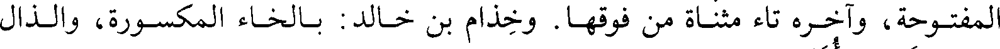
المفتوحة، وآخره تاء مثناة من فوقها. وخذام بن خالد: بالخاء المكسورة، والذال
File: 000005.gt.txt (if the image is defective, simply delete all Arabic text and the line will be excluded)

المعجمتين. واكيدر: بالهمزة المضمومة، والكاف المفتوحة، والدال المهملة المكسورة،
File: 000007.gt.txt (if the image is defective, simply delete all Arabic text and the line will be excluded)
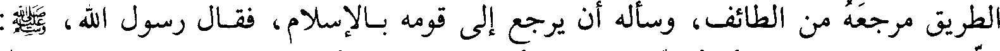
الطريق مرجعه من الطائف، وسأله أن يرجع إلى قومه بالإسلام، فقال رسول الله، صعلم:
File: 000008.gt.txt (if the image is defective, simply delete all Arabic text and the line will be excluded)
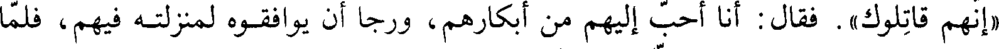
«إنهم قاتلوك». فقال: أنا أحب إليهم من أبكارهم، ورجا أن يوافقوه لمنزلته فيهم، فلما
File: 000009.gt.txt (if the image is defective, simply delete all Arabic text and the line will be excluded)
رجع إلى الطائف صعد إلى علية له، وأشرف منها عليهم، وأظهر الإسلام ودعاهم إليه،
File: 000010.gt.txt (if the image is defective, simply delete all Arabic text and the line will be excluded)
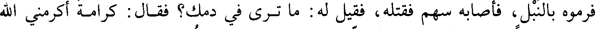
فرموه بالنبل، فأصابه سهم فقتله، فقيل له: ما ترى في دمك؟ فقال: كرامة أكرمني الله
File: 000011.gt.txt (if the image is defective, simply delete all Arabic text and the line will be excluded)
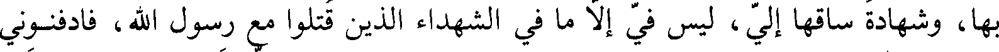
بها، وشهادة ساقها إلي، ليس في إلا ما في الشهداء الذين قتلوا مع رسول الله، فادفنوني
File: 000012.gt.txt (if the image is defective, simply delete all Arabic text and the line will be excluded)
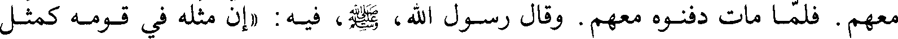
معهم. فلما مات دفنوه معهم. وقال رسول الله، صعلم، فيه: «إن مثله في قومه كمثل
File: 000013.gt.txt (if the image is defective, simply delete all Arabic text and the line will be excluded)

ذكر قدوم وفد ثقيف
File: 000014.gt.txt (if the image is defective, simply delete all Arabic text and the line will be excluded)

صاحب يس في قومه»(3).
File: 000015.gt.txt (if the image is defective, simply delete all Arabic text and the line will be excluded)

وفي هذه السنة في رمضان قدم وفد ثقيف على رسول الله، صعلم.
File: 000016.gt.txt (if the image is defective, simply delete all Arabic text and the line will be excluded)

وسبب ذلك أنهم رأوا أن من يحيط بهم من العرب قد نصبوا لهم القتال، وشنوا
File: 000017.gt.txt (if the image is defective, simply delete all Arabic text and the line will be excluded)

الغارات عليهم، وكان أشدهم في ذلك مالك بن عوف النصري، فلا يخرج منهم مال إلا
File: 000018.gt.txt (if the image is defective, simply delete all Arabic text and the line will be excluded)
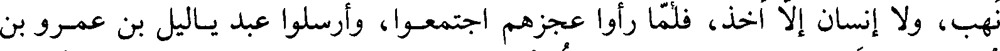
نهب، ولا إنسان إلا اخذ، فلما رأوا عجزهم اجتمعوا، وأرسلوا عبد ياليل بن عمرو بن
File: 000019.gt.txt (if the image is defective, simply delete all Arabic text and the line will be excluded)

عمير، والحكم بن عمرو بن وهب، وشرحبيل بن غيلان، وهؤلاء من الأحلاف، وأرسلوا
File: 000020.gt.txt (if the image is defective, simply delete all Arabic text and the line will be excluded)
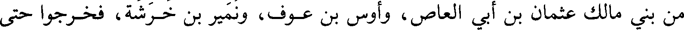
من بني مالك عثمان بن أبي العاص، وأوس بن عوف، ونمير بن خرشة، فخرجوا حتى
File: 000021.gt.txt (if the image is defective, simply delete all Arabic text and the line will be excluded)

قدموا على رسول الله، صعلم، فأنزلهم في قبة في المسجد، فكان خالد بن سعيد بن
File: 000022.gt.txt (if the image is defective, simply delete all Arabic text and the line will be excluded)
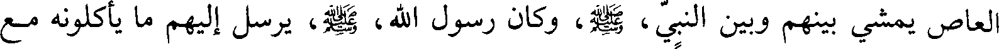
العاص يمشي بينهم وبين النبي، صعلم، وكان رسول الله، صعلم، يرسل إليهم ما يأكلونه مع
File: 000023.gt.txt (if the image is defective, simply delete all Arabic text and the line will be excluded)

خالد، وكانوا لا يأكلون طعاما حتى يأكل خالد منه، حتى أسلموا.
File: 000024.gt.txt (if the image is defective, simply delete all Arabic text and the line will be excluded)
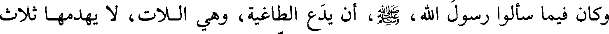
وكان فيما سألوا رسول الله، صعلم، أن يدع الطاغية، وهي اللات، لا يهدمها ثلاث
File: 000025.gt.txt (if the image is defective, simply delete all Arabic text and the line will be excluded)

سنين، فأبى عليهم، وكان قصدهم بذلك أن يتسلموا [بتركها] من سفهائهم ونسائهم،
File: 000026.gt.txt (if the image is defective, simply delete all Arabic text and the line will be excluded)

فنزلوا إلى شهر فلم يجبهم، وسألوه أن يعفيهم من الصلاة فقال: «لا خير في دين لا
File: 000027.gt.txt (if the image is defective, simply delete all Arabic text and the line will be excluded)
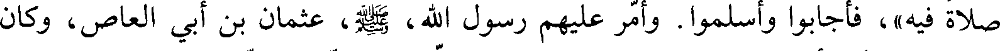
صلاة فيه»، فأجابوا وأسلموا. وأمر عليهم رسول الله، صعلم، عثمان بن أبي العاص، وكان
File: 000028.gt.txt (if the image is defective, simply delete all Arabic text and the line will be excluded)
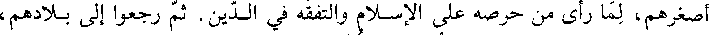
أصغرهم، لما رأى من حرصه على الإسلام والتفقه في الدين. ثم رجعوا إلى بلادهم،
File: 000029.gt.txt (if the image is defective, simply delete all Arabic text and the line will be excluded)
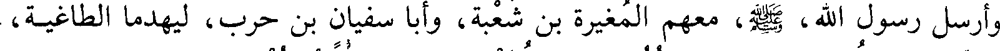
وأرسل رسول الله، صعلم، معهم المغيرة بن شعبة، وأبا سفيان بن حرب، ليهدما الطاغية،
File: 000030.gt.txt (if the image is defective, simply delete all Arabic text and the line will be excluded)
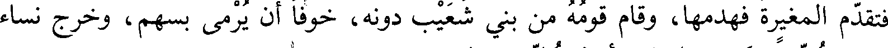
فتقدم المغيرة فهدمها، وقام قومه من بني شعيب دونه، خوفا أن يرمى بسهم، وخرج نساء
File: 000031.gt.txt (if the image is defective, simply delete all Arabic text and the line will be excluded)

ثقيف حسرا يبكين عليها، وأخذ حليها ومالها(1).
File: 000032.gt.txt (if the image is defective, simply delete all Arabic text and the line will be excluded)
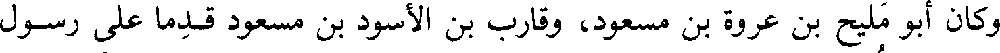
وكان أبو مليح بن عروة بن مسعود، وقراب بن الأسود بن مسعود قدما على رسول
File: 000033.gt.txt (if the image is defective, simply delete all Arabic text and the line will be excluded)
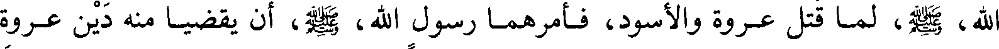
الله، صعلم، لما قتل عروة والأسود، فأمرهما رسول الله، صعلم، أن يقضي منه دين عروة
File: 000034.gt.txt (if the image is defective, simply delete all Arabic text and the line will be excluded)

والأسود ابني مسعود ففعلا، وكان الأسود مات كافرا، فسأل ابنه قارب بن الأسود رسول
File: 000035.gt.txt (if the image is defective, simply delete all Arabic text and the line will be excluded)
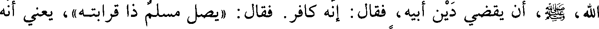
الله، صعلم، أن يقضي دين أبيه، فقال: إنه كافر. فقال: «يصل مسلم ذا قرابته»، يعني أنه
File: 000036.gt.txt (if the image is defective, simply delete all Arabic text and the line will be excluded)
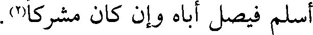
أسلم فيصل أباه وإن كان مشركا(2).
File: 000037.gt.txt (if the image is defective, simply delete all Arabic text and the line will be excluded)

ذكر غزوة طيء وإسلام عدي بن حاتم
File: 000038.gt.txt (if the image is defective, simply delete all Arabic text and the line will be excluded)

في هذه السنة في شهر ربيع الآخر أرسل النبي، صعلم، علي بن أبي طالب في سرية
File: 000039.gt.txt (if the image is defective, simply delete all Arabic text and the line will be excluded)

[إلى دار] طيء، وأمره أن يهدم صنمهم الفلس(2)، فسار إليهم وأغار عليهم، فغنم وسبى
File: 000040.gt.txt (if the image is defective, simply delete all Arabic text and the line will be excluded)
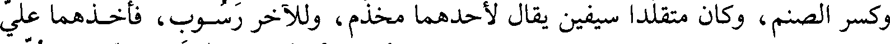
وكسر الصنم، وكان متقلدا سيفين يقال لأحدهما مخذم، وللآخر رسوب، فأخذهما علي
File: 000041.gt.txt (if the image is defective, simply delete all Arabic text and the line will be excluded)

وحملهما إلى رسول الله، صعلم، وكان الحارث بن أبي شمر أهدى السيفين للصنم، فعلقا
File: 000042.gt.txt (if the image is defective, simply delete all Arabic text and the line will be excluded)

عليه، وأسر بنتا لحاتم الطائي، وحملت إلى رسول الله، صعلم، بالمدينة فأطلقها(4).
File: 000043.gt.txt (if the image is defective, simply delete all Arabic text and the line will be excluded)
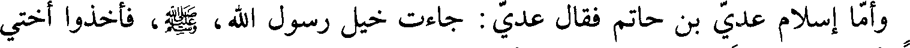
وإما إسلام عدي بن حاتم فقال عدي: جاءت خيل رسول الله، صعلم، فأخذوا أختي
File: 000044.gt.txt (if the image is defective, simply delete all Arabic text and the line will be excluded)

وناسا فأتوا بهم رسول الله، صعلم، فقالت أختي: يا رسول الله هلك الوالد، وغالب الوافد،
File: 000045.gt.txt (if the image is defective, simply delete all Arabic text and the line will be excluded)

فامنن علي من الله عليك. فقال «ومن وافدك»؟ قالت: عدي بن حاتم. قال: «الذي فر
File: 000046.gt.txt (if the image is defective, simply delete all Arabic text and the line will be excluded)
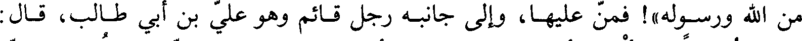
من الله ورسوله»! من عليها، وإلى جانبه رجل قائم وهو علي بن أبي طالب، قال:
File: 000047.gt.txt (if the image is defective, simply delete all Arabic text and the line will be excluded)
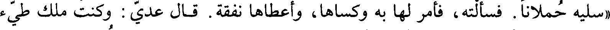
«سليه حملانا. فسألته، فأمر لها به وكساها، وأعطاها نفقة. قال عدي: وكنت ملك طيء
File: 000048.gt.txt (if the image is defective, simply delete all Arabic text and the line will be excluded)

آخذ منهم المرباع وأنا نصراني، فلما قدمت خيل رسول الله، صعلم، هربت إلى الشام من
File: 000049.gt.txt (if the image is defective, simply delete all Arabic text and the line will be excluded)

الإسلام، وقلت أكون عند أهل ديني، فبينا أنا بالشام إذ جاءت أختي، وأخذت تلومني
File: 000050.gt.txt (if the image is defective, simply delete all Arabic text and the line will be excluded)
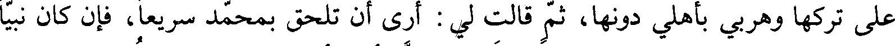
على تركها وهربي بأهلي دونها، ثم قالت لي: أرى أن تلحق بمحمد سريعا، فإن كان نبيا
File: 000051.gt.txt (if the image is defective, simply delete all Arabic text and the line will be excluded)
كان للسابق فضله، وإن كان ملكا كنت في عز وأنت أنت. قال: فقدمت على رسول
File: 000052.gt.txt (if the image is defective, simply delete all Arabic text and the line will be excluded)

الله، صعلم، فسلمت عليه وعرفته نفسي، فانطلق بي إلى بيته، فلقيته امرأة ضعيفة
File: 000053.gt.txt (if the image is defective, simply delete all Arabic text and the line will be excluded)

فاستوقفته، فوقف لها طويلا تكلمه في حاجتها، فقلت: ما هذا بملك، ثم دخلت بيته،
File: 000054.gt.txt (if the image is defective, simply delete all Arabic text and the line will be excluded)

فأجلسني على وسادة، وجلس على الأرض، فقلت في نفسي: ما هذا ملك. فقال لي:
File: 000055.gt.txt (if the image is defective, simply delete all Arabic text and the line will be excluded)

يا عدي إنك تأخذ المرباع، وهو لا يحل في دينك، ولعلك إنما يمنعك من الإسلام ما
File: 000056.gt.txt (if the image is defective, simply delete all Arabic text and the line will be excluded)
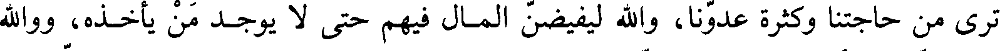
ترى من حاجتنا وكثرة عدونا، والله ليفيضن المال فيهم حتى لا يوجد من يأخذه، ووالله
File: 000057.gt.txt (if the image is defective, simply delete all Arabic text and the line will be excluded)
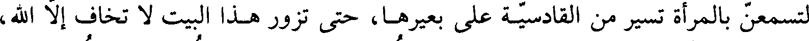
لتسمعن بالمرأة تسير من القادسية على بعيرها، حتى تزور هذا البيت لا تخاف إلا الله،
File: 000058.gt.txt (if the image is defective, simply delete all Arabic text and the line will be excluded)
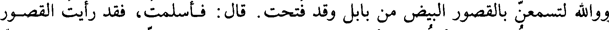
ووالله لتسمعن بالقصور البيض من بابل وقد فتحت. قال فأسلمت، فقد رأيت القصور
File: 000059.gt.txt (if the image is defective, simply delete all Arabic text and the line will be excluded)

البيض وقد فتحت، ورأيت المرأة تخرج إلى البيت لا تخاف إلا الله، ووالله لتكونن
File: 000060.gt.txt (if the image is defective, simply delete all Arabic text and the line will be excluded)
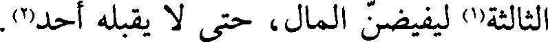
الثالثة(1) ليفيضن المال، حتى لا يقبله أحد(2) .
File: 000061.gt.txt (if the image is defective, simply delete all Arabic text and the line will be excluded)

ذكر قدوم الوفود على رسول الله صعلم(3)
File: 000062.gt.txt (if the image is defective, simply delete all Arabic text and the line will be excluded)

لما افتتح رسول الله ، صلعم، مكة وأسلمت ثقيف وفرغ من تبوك ضربت إليه وفود
File: 000063.gt.txt (if the image is defective, simply delete all Arabic text and the line will be excluded)
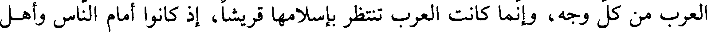
العرب من كل وجه، وانما كانت العرب تنتظر باسلامها قريشا، اذ كانوا امام الناس واهل
File: 000064.gt.txt (if the image is defective, simply delete all Arabic text and the line will be excluded)

الحرم، و صريح ولد اسماعيل بن ابراهيم عليه السلام، لا تنكر العرب ذلك العرب ذلك، وكانت
File: 000065.gt.txt (if the image is defective, simply delete all Arabic text and the line will be excluded)
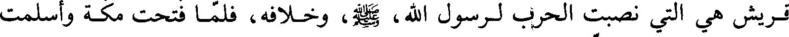
قريش هي التي نصبت الحرب لرسول الله، صعلم، وخلافه، فلما فتحت مكة وأسلمت
File: 000066.gt.txt (if the image is defective, simply delete all Arabic text and the line will be excluded)
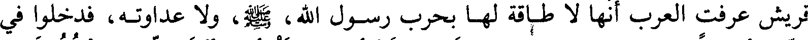
قريش عرفت العرب أنها لا طاقة لها بحرب رسول الله، صعلم، ولا عداوته، فدخلوا في
File: 000067.gt.txt (if the image is defective, simply delete all Arabic text and the line will be excluded)

الدين أفواجا، كما قال الله تعالى : ( إذا جاء نصر الله والفتح ورأيت الناس يدخلون في
File: 000068.gt.txt (if the image is defective, simply delete all Arabic text and the line will be excluded)
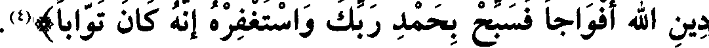
دين الله أفواجا فسبح بحمد ربك واستغفره إنه كان توابا)(4)
File: 000069.gt.txt (if the image is defective, simply delete all Arabic text and the line will be excluded)

ودخلت السنة الثالثة من الهجرة
File: 000070.gt.txt (if the image is defective, simply delete all Arabic text and the line will be excluded)
في المحرم سنة ثلاث سمع رسول الله، صعلم، أن جمعا من بني ثعلبة بن سعد بن
File: 000071.gt.txt (if the image is defective, simply delete all Arabic text and the line will be excluded)

ذبيان، وبني محارب بن حفص، تجمعوا ليصيبوا من المسلمين، فسار إليهم في أربعمائة
File: 000072.gt.txt (if the image is defective, simply delete all Arabic text and the line will be excluded)

وخمسين رجلا، فلما صار بذي القصة(1) لقي رجلا من ثعلبة فدعاه إلى الإسلام، فأسلم
File: 000073.gt.txt (if the image is defective, simply delete all Arabic text and the line will be excluded)
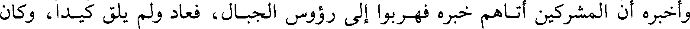
وأخبره أن المشركين أتاهم خبره فهربوا إلى رؤوس الجبال، فعاد ولم يلق كيدا، وكان
File: 000074.gt.txt (if the image is defective, simply delete all Arabic text and the line will be excluded)

مقامه اثنتي عشرة ليلة(2) .
File: 000075.gt.txt (if the image is defective, simply delete all Arabic text and the line will be excluded)
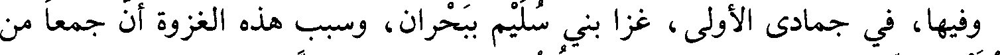
وفيها، في جمادى الأولى، غزا بني سليم ببحران، وسبب هذه الغزوة أن جمعا من
File: 000076.gt.txt (if the image is defective, simply delete all Arabic text and the line will be excluded)

بني سليم تجمعوا ببحران من ناحية الفرع، فبلغ ذلك النبي، صعلم، فسار إليهم في
File: 000077.gt.txt (if the image is defective, simply delete all Arabic text and the line will be excluded)
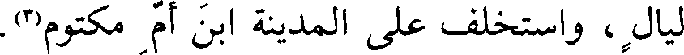
ليال ، واستخلف على المدينة ابن أم مكتوم(3).
File: 000078.gt.txt (if the image is defective, simply delete all Arabic text and the line will be excluded)

(القصة : بفتح القاف، والصاد المهملة . وبحران : بالباء الموحدة، والحاء المهملة
File: 000079.gt.txt (if the image is defective, simply delete all Arabic text and the line will be excluded)

ذكر قتل كعب بن الأشرف اليهودي(4)
File: 000080.gt.txt (if the image is defective, simply delete all Arabic text and the line will be excluded)

الساكنة) .
File: 000081.gt.txt (if the image is defective, simply delete all Arabic text and the line will be excluded)

وفي هذه السنة قتل كعب بن الأشرف، وهو أحد بني نبهان من طيء، وكانت أمه
File: 000082.gt.txt (if the image is defective, simply delete all Arabic text and the line will be excluded)
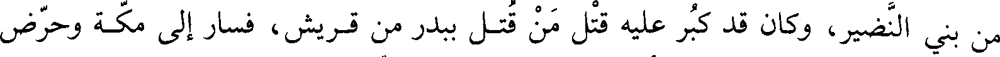
من بني النضير، وكان قد كبر عليه قتل من قتل ببدر من قريش، فسار إلى مكة وحرض
File: 000083.gt.txt (if the image is defective, simply delete all Arabic text and the line will be excluded)
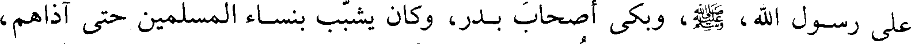
على رسول الله، صعلم، وبكى أصحاب بدر، وكان يشبب بنساء المسلمين حتى آذاهم،
File: 000084.gt.txt (if the image is defective, simply delete all Arabic text and the line will be excluded)

فلما عاد إلى المدينة قال رسول الله ، صعلم : (من لي بابن الأشرف)؟ فقال محمد بن
File: 000085.gt.txt (if the image is defective, simply delete all Arabic text and the line will be excluded)

مسلمة الأنصاري : أنا لك به، أنا أقتله. قال: (فافعل إن قدرت على ذلك) . قال: يا
File: 000086.gt.txt (if the image is defective, simply delete all Arabic text and the line will be excluded)

رسول الله لا بد لنا ما نقول. قال: ( قولوا ما بدا لكم، فأنتم في حل من ذلك).
File: 000087.gt.txt (if the image is defective, simply delete all Arabic text and the line will be excluded)
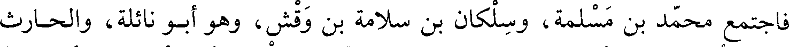
فاجتمع محمد بن مسلمة، وسلكان بن سلامة بن وقش، وهو أبو نائلة، والحارث
File: 000088.gt.txt (if the image is defective, simply delete all Arabic text and the line will be excluded)

بن أوس بن معاذ، وكان أخا كعب من الرضاعة، وعباد بن بشر، وأبو عبس بن جبر(1)، ثم
File: 000089.gt.txt (if the image is defective, simply delete all Arabic text and the line will be excluded)
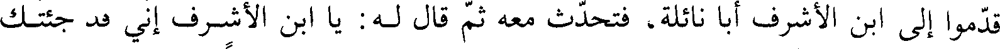
قدموا إلى ابن الأشرف أبا نائلة، فتحدث معه ثم قال له: يا ابن الأشرف إني قد جئتك
File: 000090.gt.txt (if the image is defective, simply delete all Arabic text and the line will be excluded)
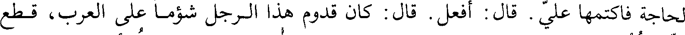
لحاجة فاكتمها علي . قال: افعل. قال: كان قدوم هذا الرجل شؤما على العرب، قطع
File: 000091.gt.txt (if the image is defective, simply delete all Arabic text and the line will be excluded)
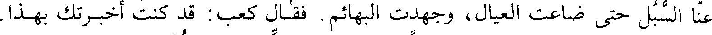
عنا السبل حتى ضاعت العيال، وجهدت البهائم. فقال كعب: قد كنت أخبرتك بهذا.
File: 000092.gt.txt (if the image is defective, simply delete all Arabic text and the line will be excluded)
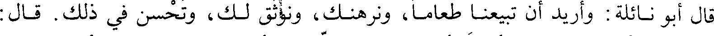
قال أبو نائلة: وأريد أن تبيعنا طعاما، ونرهنك، ونوثق لك، وتحسن في ذلك. قال:
File: 000093.gt.txt (if the image is defective, simply delete all Arabic text and the line will be excluded)

ترهنوني أبناءكم؟ قال: أردت أن تفضحنا، إن معي أصحابي على مثل رأيي، تبيعهم
File: 000094.gt.txt (if the image is defective, simply delete all Arabic text and the line will be excluded)

وتحسن، ونجعل عندك رهنا من الحلقة(2) ما فيه وفاء، وأراد أبو نائلة بذكر الحلقة، وهي
File: 000095.gt.txt (if the image is defective, simply delete all Arabic text and the line will be excluded)

السلاح، أن لا ينكر السلاح إذا جاء مع أصحابه . فقال: إن في الحلقة لوفاء.
File: 000096.gt.txt (if the image is defective, simply delete all Arabic text and the line will be excluded)
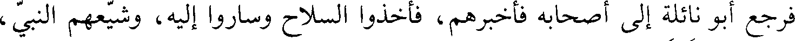
فرجع أبو نائلة إلى أصحابه فأخبرهم، فأخذوا السلاح وساروا إليه، وشيعهم النبي،
File: 000097.gt.txt (if the image is defective, simply delete all Arabic text and the line will be excluded)

إلى بقي الغرقد، ودعا لهم. فلما انتهوا إلى حصن كعب، هتف به أبو نائلة، وكان
File: 000098.gt.txt (if the image is defective, simply delete all Arabic text and the line will be excluded)
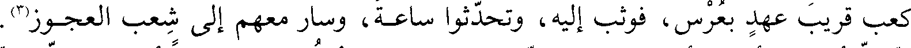
كعب قريب عهد بعرس، فوثب إليه، وتحدثوا ساعة، وسار معهم إلى شعب العجوز(3).
File: 000099.gt.txt (if the image is defective, simply delete all Arabic text and the line will be excluded)
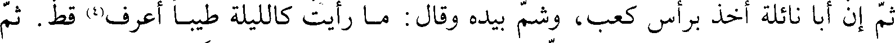
ثم إن أبا نائلة أخذ برأس كعب، وشم بيده وقال: ما رأيت كالليلة طيبا أعرف(4) قط. ثم
File: 000100.gt.txt (if the image is defective, simply delete all Arabic text and the line will be excluded)

مشى ساعة وعاد لمثلها حتى اطمأن كعب، ثم مشى ساعة، وأخذ بفود رأسه، ثم قال:
File: 000101.gt.txt (if the image is defective, simply delete all Arabic text and the line will be excluded)
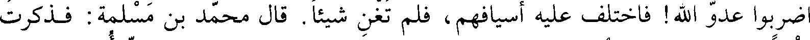
اضربوا عدو الله! فاختلفت عليه أسيافهم، فلم تغن شيئا. قال محمد بن سلمة: فذكرت
File: 000102.gt.txt (if the image is defective, simply delete all Arabic text and the line will be excluded)
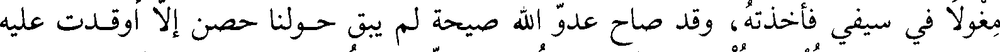
مغولا في سيفي فأخذته، وقد صاح عدو الله صيحة لم يبق حولنا حصن إلا أوقدت عليه
File: 000103.gt.txt (if the image is defective, simply delete all Arabic text and the line will be excluded)
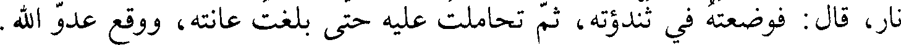
نار، قال: فوضعته في ثندوته، ثم تحاملت عليه حتى بلغت عانته، ووقع عدو الله .
File: 000104.gt.txt (if the image is defective, simply delete all Arabic text and the line will be excluded)
وقد أصيب الحارث بن أوس بن معاذ، أصابه بعض أسيافنا، قال: فخرجنا على
File: 000105.gt.txt (if the image is defective, simply delete all Arabic text and the line will be excluded)
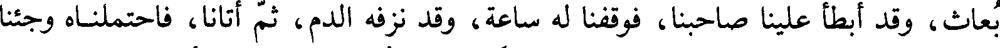
بعاث، وقد أبطأ علينا صاحبنا، فوقفنا له ساعة، وقد نزفه الدم، ثم أتانا، فاحتملناه وجئنا
File: 000106.gt.txt (if the image is defective, simply delete all Arabic text and the line will be excluded)
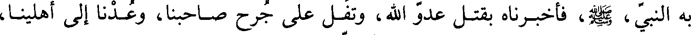
به النبي، صعلم، فأخبرناه بقتل عدو الله، وتفل على جرح صاحبنا، وعدنا إلى أهلينا،
File: 000107.gt.txt (if the image is defective, simply delete all Arabic text and the line will be excluded)
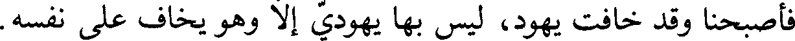
فأصبحنا وقد خافت يهود، لوقعتنا بعدو الله فليس بها يهودي إلا وهو يخاف على نفسه.
File: 000108.gt.txt (if the image is defective, simply delete all Arabic text and the line will be excluded)

قال: وقال رسول الله، صعلم : (من ظفرتم به من رجال يهود فاقتلوه). فوثب محيصة
File: 000109.gt.txt (if the image is defective, simply delete all Arabic text and the line will be excluded)
ابن مسعود على ابن سنينة اليهودي، وهو من تجار يهود، فقتله، وكان يبايعهم، فقال له
File: 000110.gt.txt (if the image is defective, simply delete all Arabic text and the line will be excluded)

أخوه حويصة، وهو مشرك: يا عدو الله قتلته! أما والله لرب شحم في بطنك من ماله!
File: 000111.gt.txt (if the image is defective, simply delete all Arabic text and the line will be excluded)

وضربه، فقال محيصة: لقد أمرني بقتله من لو أمرني بقتلك لقتلتك. قال: فوالله إن كان
File: 000112.gt.txt (if the image is defective, simply delete all Arabic text and the line will be excluded)

لأول إسلام حويصة. فقال: إن دينا بلغ بك ما أرى لعجب. ثم أسلم(1).
File: 000113.gt.txt (if the image is defective, simply delete all Arabic text and the line will be excluded)

(عبس بن جبر: بفتح العين المهملة، وسكون الباء الموحدة. وجبر: بالجيم،
File: 000114.gt.txt (if the image is defective, simply delete all Arabic text and the line will be excluded)
والباء الموحدة. وسنينة: تصغير سن).
File: 000115.gt.txt (if the image is defective, simply delete all Arabic text and the line will be excluded)

وفي ربيع الأول منها تزوج عثمان بن عفان أم كلثوم بنت النبي، صلى الله عليه وآله وسلم.
File: 000116.gt.txt (if the image is defective, simply delete all Arabic text and the line will be excluded)
جمادى الآخرة(2).
File: 000117.gt.txt (if the image is defective, simply delete all Arabic text and the line will be excluded)
وفيها ولد السائب بن زيد(3) ابن أخت نمير(4).
File: 000118.gt.txt (if the image is defective, simply delete all Arabic text and the line will be excluded)

وقال الواقدي: وفيها غزا رسول الله، صعلم، غزوة أنمار يقال لها ذو امر(5)، وقد ذكرنا
File: 000119.gt.txt (if the image is defective, simply delete all Arabic text and the line will be excluded)
قول ابن إسحاق قبل ذلك(6) .
File: 000120.gt.txt (if the image is defective, simply delete all Arabic text and the line will be excluded)
وفيها كان غزوة الفردة(7)، وكان أميرها زيد بن حارثة، وهي أول سرية خرج فيها
File: 000121.gt.txt (if the image is defective, simply delete all Arabic text and the line will be excluded)

زيد أميرا.
File: 000122.gt.txt (if the image is defective, simply delete all Arabic text and the line will be excluded)
فسلكوا طريق العراق، فخرج منهم جماعة، فيهم صفوان بن أمية، وأبو سفيان. وكان
File: 000123.gt.txt (if the image is defective, simply delete all Arabic text and the line will be excluded)

عظيم تجارتهم الفضة، وكان دليلهم فرات بن حيان، بن بكر وائل، فبعث رسول
File: 000124.gt.txt (if the image is defective, simply delete all Arabic text and the line will be excluded)
الله، صلى الله عليه وآله وسلم، زيدا، فلقيهم على ماء يقال له الفردة، فأصاب العير وما فيها، وأعجزه
File: 000125.gt.txt (if the image is defective, simply delete all Arabic text and the line will be excluded)

الرجال، فقدم بها على رسول الله، صعلم، وكان الخمس عشرين ألفا، وقسم الأربعة
File: 000126.gt.txt (if the image is defective, simply delete all Arabic text and the line will be excluded)
أخماس على السوية، وأتى بفرات بن حيان أسيرا فأسلم، فأطلقه رسول الله، صلى الله عليه وآله وسلم(1).
File: 000127.gt.txt (if the image is defective, simply delete all Arabic text and the line will be excluded)
(الفردة: ماء بنجد، وقد اختلف العلماء في ضبطه، فقيل فردة بالفاء المفتوحة
File: 000128.gt.txt (if the image is defective, simply delete all Arabic text and the line will be excluded)

والراء الساكنة، وبه مات زيد الخيل، ويرد ذكره، وضبطه ابن الفرات في غير موضع قردة
File: 000129.gt.txt (if the image is defective, simply delete all Arabic text and the line will be excluded)

بالقاف، وقال ابن إسحاق: وسير زيد بن حارثة إلى الفردة، ماء من مياه نجد، ضبطه ابن
File: 000130.gt.txt (if the image is defective, simply delete all Arabic text and the line will be excluded)
الفرات أيضا بفتح الفاء والراء، فإن كانا مكانين وإلا فقد ضبط ابن الفرات أحدهما
File: 000131.gt.txt (if the image is defective, simply delete all Arabic text and the line will be excluded)

ذكر قتل أبي رافع(2)
File: 000132.gt.txt (if the image is defective, simply delete all Arabic text and the line will be excluded)
خطأ).
File: 000133.gt.txt (if the image is defective, simply delete all Arabic text and the line will be excluded)
في هذه السنة في جمادى الآخرة، قتل أبو رافع سلام بن أبي الحقيق اليهودي، وكان
File: 000134.gt.txt (if the image is defective, simply delete all Arabic text and the line will be excluded)

يظاهر كعب بن الأشرف على رسول الله، فلما قتل كعب بن الأشرف، وكان قتلته
File: 000135.gt.txt (if the image is defective, simply delete all Arabic text and the line will be excluded)
من الأوس، قالت الخزرج: والله لا يذهبون بها علينا عند رسول الله، صعلم، وكانا
File: 000136.gt.txt (if the image is defective, simply delete all Arabic text and the line will be excluded)
يتصاولان(3) تصاول الفحلين، فتذاكر الخزرج من يعادي رسول الله، صعلم، كابن الأشرف،
File: 000137.gt.txt (if the image is defective, simply delete all Arabic text and the line will be excluded)
فذكروا ابن أبي الحقيق، وهو بخيبر، فاستأذنوا رسول الله، صعلم، في قتله، فأذن لهم،
File: 000138.gt.txt (if the image is defective, simply delete all Arabic text and the line will be excluded)

فخرج إليه من الخزرج عبد الله بن عتيك، ومسعود بن سنان، وعبد الله بن أنيس، وأبو
File: 000139.gt.txt (if the image is defective, simply delete all Arabic text and the line will be excluded)

قتادة، وخزاعي بن الأسود حليف لهم، وأمر عليهم عبد الله بن عتيك، فخرجوا حتى
File: 000140.gt.txt (if the image is defective, simply delete all Arabic text and the line will be excluded)
قدموا خيبر، فأتوا دار أبي رافع ليلا، فلم يدعوا بابا في الدار إلا أغلقوه على أهله، وكان
File: 000141.gt.txt (if the image is defective, simply delete all Arabic text and the line will be excluded)
في علية، فاستأذنوا عليه، فخرجت امرأته فقالت: من أنتم؟ قالوا: نفر من العرب
File: 000142.gt.txt (if the image is defective, simply delete all Arabic text and the line will be excluded)
يلتمسون الميرة. قالت: ذاك صاحبكم فادخلوا عليه، فدخلوا. فلما دخلوا أغلقوا باب
File: 000143.gt.txt (if the image is defective, simply delete all Arabic text and the line will be excluded)
العلية ووجدوه على فراشه وابتدروه، فصاحت المرأة، فجعل الرجل منهم يريد قتلها،
File: 000144.gt.txt (if the image is defective, simply delete all Arabic text and the line will be excluded)
انتهيت إلى درجة، فوضعت رجلي وأنا أظن أني انتهيت إلى الأرض، فوقعت في ليلة
File: 000145.gt.txt (if the image is defective, simply delete all Arabic text and the line will be excluded)
مقمرة، وانكسرت ساقي، فعصبتها بعمامتي، وجلست عند الباب فقلت: والله لا أبرح
File: 000146.gt.txt (if the image is defective, simply delete all Arabic text and the line will be excluded)
حتى أعلم أقتلته أم لا . فلما صاح الديك قام الناعي فقال: أنعي أبا رافع تاجر أهل
File: 000147.gt.txt (if the image is defective, simply delete all Arabic text and the line will be excluded)

الحجاز، فانطلقت إلى أصحابي فقلت: النجاء! قد قتل الله أبا رافع ، فانتهيت إلى
File: 000148.gt.txt (if the image is defective, simply delete all Arabic text and the line will be excluded)
النبي، صلى الله عليه وآله وسلم، فحدثته. فقال: ابسط رجلك. فبسطتها، فمسحها، فكأني لم أشتكها
File: 000149.gt.txt (if the image is defective, simply delete all Arabic text and the line will be excluded)

قيل: كان قتل أبي رافع في ذي الحجة سنة أربع من الهجرة، والله أعلم.
File: 000150.gt.txt (if the image is defective, simply delete all Arabic text and the line will be excluded)

(سلام: بتشديد اللام. وحقيق: بضم الحاء المهملة، وفتح القاف الأولى، تصغير
File: 000151.gt.txt (if the image is defective, simply delete all Arabic text and the line will be excluded)
حق) .
File: 000152.gt.txt (if the image is defective, simply delete all Arabic text and the line will be excluded)
وفيها تزوج رسول الله، صلى الله عليه وآله وسلم، حفصة بنت عمر بن الخطاب في شعبان(2)، وكانت
File: 000153.gt.txt (if the image is defective, simply delete all Arabic text and the line will be excluded)

قبله تحت خنيس بضم الخاء المعجمة، وبالنون المفتوحة، وبالياء المعجمة باثنتين من
File: 000154.gt.txt (if the image is defective, simply delete all Arabic text and the line will be excluded)
تحت، وبالسين المهملة) وهو ابن حذافة السهمي، فتوفي فيها.
File: 000155.gt.txt (if the image is defective, simply delete all Arabic text and the line will be excluded)

ذكر غزوة أحد(3)
File: 000156.gt.txt (if the image is defective, simply delete all Arabic text and the line will be excluded)
وفيها في شوال لسبع ليال خلون منه كانت وقعة أحد، وقيل للنصف منه، وكان
File: 000157.gt.txt (if the image is defective, simply delete all Arabic text and the line will be excluded)

الذي أهاجها وقعة بدر، فإنه لما أصيب من المشركين من أصيب ببدر، مشى عبد الله بن
File: 000158.gt.txt (if the image is defective, simply delete all Arabic text and the line will be excluded)

أبي ربيعة، وعكرمة بن أبي جهل، وصفوان بن أمية، وغيرهم ممن أصيب آباؤهم
File: 000159.gt.txt (if the image is defective, simply delete all Arabic text and the line will be excluded)
وأبناؤهم وإخوانهم بها، فكلموا أبا سفيان ومن كان له في تلك العير تجارة، وسألوهم أن
File: 000160.gt.txt (if the image is defective, simply delete all Arabic text and the line will be excluded)
يعينوهم بذلك المال على حرب رسول الله، صلى الله عليه وآله وسلم، ليدركوا ثأرهم منهم، ففعلوا.
File: 000161.gt.txt (if the image is defective, simply delete all Arabic text and the line will be excluded)

وتجهز الناس، وأرسلوا أربعة نفر، وهم: عمرو بن العاص، وهبيرة بن أبي وهب،
File: 000162.gt.txt (if the image is defective, simply delete all Arabic text and the line will be excluded)
وابن الزبعرى، وأبو عزة الجمحي، فساروا في العرب ليستنفروهم، فجمعوا جمعا من
File: 000163.gt.txt (if the image is defective, simply delete all Arabic text and the line will be excluded)
ثقيف وكنانة وغيرهم، واجتمعت قريش بأحابيشها، ومن أطاعها من قبائل كنانة وتهامة،
File: 000164.gt.txt (if the image is defective, simply delete all Arabic text and the line will be excluded)

ودعا جبير بن مطعم غلامه وحشي بن حرب، وكان حبشيا يقدف بالحربة قلما يخطيء،
File: 000165.gt.txt (if the image is defective, simply delete all Arabic text and the line will be excluded)
فقال له: أخرج مع الناس، فإن قتلت عم محمد بعمي طعيمة بن عدي فأنت عتيق.
File: 000166.gt.txt (if the image is defective, simply delete all Arabic text and the line will be excluded)

وخرجوا معهم بالظعن لئلا يفروا، وكان أبو سفيان قائد الناس، فخرج بزوجته هند
File: 000167.gt.txt (if the image is defective, simply delete all Arabic text and the line will be excluded)

بنت عتبة، وغيره من رؤساء قريش خرجوا بنسائهم. خرج عكرمة بن أبي جهل بزوجته أم
File: 000168.gt.txt (if the image is defective, simply delete all Arabic text and the line will be excluded)

حكيم بنت الحارث بن هشام، وخرج الحارث بن المغيرة بفاطمة بنت الوليد بن المغيرة
File: 000169.gt.txt (if the image is defective, simply delete all Arabic text and the line will be excluded)
أخت خالد .
File: 000170.gt.txt (if the image is defective, simply delete all Arabic text and the line will be excluded)

وخرج صفوان بن أمية ببريدة(1)، وقيل برزة بنت مسعود الثقفية أخت عروة بن
File: 000171.gt.txt (if the image is defective, simply delete all Arabic text and the line will be excluded)

مسعود، وهي أم ابنه عبد الله بن صفوان، وخرج عمرو بن العاص بريطة بنت منبه بن
File: 000172.gt.txt (if the image is defective, simply delete all Arabic text and the line will be excluded)

الحجاج، وهي أم ابنه عبيد(2) الله بن عمرو، وخرج طلحه بن ابي طلحه بسلافة بنت
File: 000173.gt.txt (if the image is defective, simply delete all Arabic text and the line will be excluded)
سعد، وهي أم بنيه مسافع، والجلاس، وكلاب، وغيرهم(3).
File: 000174.gt.txt (if the image is defective, simply delete all Arabic text and the line will be excluded)

وكان مع النساءالدفوف يبكين على قتلى بدر يحرضن(4) بذلك المشركين.
File: 000175.gt.txt (if the image is defective, simply delete all Arabic text and the line will be excluded)
وكان مع المشركين أبو عامر الراهب الأنصاري، وكان خرج إلى مكة مباعدا لرسول
File: 000176.gt.txt (if the image is defective, simply delete all Arabic text and the line will be excluded)
الله، صلى الله عليه وآله وسلم، ومعه خمسون غلاما من الأوس، وقيل كانوا خمسة عشر، وكان يعد قريشا أنه
File: 000177.gt.txt (if the image is defective, simply delete all Arabic text and the line will be excluded)

لو لقي محمدا لم يتخلف عنه من الأوس رجلان. فلما التقى الناس بأحد كان أبو عامر
File: 000178.gt.txt (if the image is defective, simply delete all Arabic text and the line will be excluded)

فقالوا: فلا أنعم الله بك عينا يا فاسق! فقال: لقد أصاب قومي بعدي شر، ثم قاتلهم
File: 000179.gt.txt (if the image is defective, simply delete all Arabic text and the line will be excluded)

قتالا شديدا حتى راضخهم بالحجارة. وكانت هند كلما مرت بوحشي أو مر بها قالت
File: 000180.gt.txt (if the image is defective, simply delete all Arabic text and the line will be excluded)

له(5): يا أبا دسمة أشف واستشف(6)، وكان يكنى أبا دسمة، فأقبلوا حتى نزلوا بعينين
File: 000181.gt.txt (if the image is defective, simply delete all Arabic text and the line will be excluded)
بجبل ببطن السبخة، من قناة على شفير الوادي، مما يلي المدينة.
File: 000182.gt.txt (if the image is defective, simply delete all Arabic text and the line will be excluded)

فلما سمع بهم رسول الله، صلعم، والمسلمون قال: إني رأيت بقرا فأولتها خيرا،
File: 000183.gt.txt (if the image is defective, simply delete all Arabic text and the line will be excluded)

ورأيت في ذباب سيفي ثلما، ورأيت أني أدخلت يدي في درع حصينة، فأولتها المدينة،
File: 000184.gt.txt (if the image is defective, simply delete all Arabic text and the line will be excluded)

فإن رأيتم أن تقيموا بالمدينة وتدعوهم، فإن أقاموا أقاموا بشر [مقام]، وإن دخلوا علينا
File: 000185.gt.txt (if the image is defective, simply delete all Arabic text and the line will be excluded)

قاتلناهم فيها.
File: 000186.gt.txt (if the image is defective, simply delete all Arabic text and the line will be excluded)
وكان رأي عبد الله بن أبي بن سلول مع رأي رسول الله، صلعم، يكره الخروج،
File: 000187.gt.txt (if the image is defective, simply delete all Arabic text and the line will be excluded)
وأشار بالخروج، وأشار بالخروج جماعة ممن استشهد يومئذ(1).
File: 000188.gt.txt (if the image is defective, simply delete all Arabic text and the line will be excluded)

وأقامت قريش يوم الأربعاء والخميس والجمعة، وخرج رسول الله، صلعم، حين
File: 000189.gt.txt (if the image is defective, simply delete all Arabic text and the line will be excluded)

صلى الجمعة، فالتقوا يوم السبت نصف شوال. فلما لبس رسول، صلعم، سلاحه
File: 000190.gt.txt (if the image is defective, simply delete all Arabic text and the line will be excluded)

وخرج ندم الذين كانوا أشاروا بالخروج إلى قريش وقالوا استكرهنا رسول الله، صلعم،
File: 000191.gt.txt (if the image is defective, simply delete all Arabic text and the line will be excluded)
ونشير عليه، فالوحي يأتيه فيه، فاعتذروا إليه وقالوا: اصنع ما شئت. فقال «لا ينبغي
File: 000192.gt.txt (if the image is defective, simply delete all Arabic text and the line will be excluded)

لنبي أن يلبس لأمته فيضعها حتى يقاتل»(2).
File: 000193.gt.txt (if the image is defective, simply delete all Arabic text and the line will be excluded)

فخرج في ألف رجل، واستخلف على المدينة ابن أم مكتوم، فلما كان بين المدينة
File: 000194.gt.txt (if the image is defective, simply delete all Arabic text and the line will be excluded)

وأحد، عاد عبد الله بن أبي بثلث الناس، فقال: أطاعهم وعصاني، وكان من تبعه أهل
File: 000195.gt.txt (if the image is defective, simply delete all Arabic text and the line will be excluded)
النفاق والريب، واتبعهم عبد الله بن حرام أخو بني سلمة، يذكرهم الله أن لا يخذلوا
File: 000196.gt.txt (if the image is defective, simply delete all Arabic text and the line will be excluded)

نبيهم، فقالوا: لو نلم أنكم تقاتلون ما أسلمناكم، وانصرفوا. فقال: أبعدكم الله أعداء
File: 000197.gt.txt (if the image is defective, simply delete all Arabic text and the line will be excluded)
الله! فسيغني الله عنكم(3).
File: 000198.gt.txt (if the image is defective, simply delete all Arabic text and the line will be excluded)

وبقي رسول الله، صلعم، في سبعمائة، فسار في حرة بني حارثة وبين أموالهم، فمر
File: 000199.gt.txt (if the image is defective, simply delete all Arabic text and the line will be excluded)

بمال رجل من المنافقين، يقال له مربع بن يقظى(4)، وكان ضرير البصر، فلما سمع حس
File: 000200.gt.txt (if the image is defective, simply delete all Arabic text and the line will be excluded)
رسول الله، صلعم، ومن معه قام يحثي التراب في وجوههم ويقول: إن كنت رسول الله،
File: 000201.gt.txt (if the image is defective, simply delete all Arabic text and the line will be excluded)

فإني لا أحل لك أن تدخل حائطي، واخذ حفنة من تراب في يده وقال: لو أعلم أني لا
File: 000202.gt.txt (if the image is defective, simply delete all Arabic text and the line will be excluded)

أصيب غيرك لضربت به وجهك. فابتدروه ليقتلوه، فقال النبي، صلعم: لا تفعلوا، فهذا
File: 000203.gt.txt (if the image is defective, simply delete all Arabic text and the line will be excluded)

الأعمى أعمى البصر والقلب. فضربه سعد بن زيد بقوس فشجه(5).
File: 000204.gt.txt (if the image is defective, simply delete all Arabic text and the line will be excluded)

وذب فرس بذنبه فأصاب كلاب سيف صاحبه، فاستله، فقال له رسول الله، صلعم:
File: 000205.gt.txt (if the image is defective, simply delete all Arabic text and the line will be excluded)

«سيوفكم(1)، فإني أرى السيوف ستسل(2) اليوم».
File: 000206.gt.txt (if the image is defective, simply delete all Arabic text and the line will be excluded)

وسار رسول الله، صلعم، حتى نزل بعدوة الوادي، وجعل ظهره وعسكره إلى أحد(3).
File: 000207.gt.txt (if the image is defective, simply delete all Arabic text and the line will be excluded)

وكان المشركون ثلاثة آلاف، منهم سبعمائة دارع، والخيل مائتي فرس، والظعن
File: 000208.gt.txt (if the image is defective, simply delete all Arabic text and the line will be excluded)

خمس عشرة امرأة، وكان المسلمون مائة دارع، ولم يكن من الخيل غير فرسين فرس
File: 000209.gt.txt (if the image is defective, simply delete all Arabic text and the line will be excluded)

لرسول الله، صلعم، وفرس لأبي بردة بن نيار. وعرض رسول الله، صلعم، المقاتلة، فرد زيد
File: 000210.gt.txt (if the image is defective, simply delete all Arabic text and the line will be excluded)

ابن ثابت، وابن عمر، وأسيد بن حضير، والبراء بن عازب، وعرابة بن أوس، وأبا سعيد
File: 000211.gt.txt (if the image is defective, simply delete all Arabic text and the line will be excluded)

الخدري، وغيرهم، وأجاز جابر بن سمرة، ورافع بن خديج(4).
File: 000212.gt.txt (if the image is defective, simply delete all Arabic text and the line will be excluded)

وأرسل أبو سفيان إلى الأنصار يقول: خلوا بيننا وبين ابن عمنا، فننصرف عنكم،
File: 000213.gt.txt (if the image is defective, simply delete all Arabic text and the line will be excluded)

فلا حاجة لنا إلى قتالكم. فردوا عليه بما يكره.
File: 000214.gt.txt (if the image is defective, simply delete all Arabic text and the line will be excluded)

وتعبى المشركون، فجعلوا على ميمنتهم خالد بن الوليد، وعلى ميسرتهم عكرمة بن
File: 000215.gt.txt (if the image is defective, simply delete all Arabic text and the line will be excluded)

أبي جهل، وكان لواؤهم مع بني عبد الدار، فقال لهم أبو سفيان: إنما يؤتى الناس من
File: 000216.gt.txt (if the image is defective, simply delete all Arabic text and the line will be excluded)

قبل راياتهم، فإما أن تكفونا، وإما أن تخلوا بيننا وبين اللواء، يحرضهم بذلك. فقالوا
File: 000217.gt.txt (if the image is defective, simply delete all Arabic text and the line will be excluded)

ستعلم إذا التقينا كيف نصنع، وذلك أراد.
File: 000218.gt.txt (if the image is defective, simply delete all Arabic text and the line will be excluded)

واستقبل رسول الله، صلى الله عليه وآله وسلم، المدينة وترك أحدا خلف ظهره، وجعل وراءه الرماة،
File: 000219.gt.txt (if the image is defective, simply delete all Arabic text and the line will be excluded)

وهم خمسون رجلا، وأمر عليهم عبد الله بن جبير، أخا خوات بن جبير، وقال له: انضح
File: 000220.gt.txt (if the image is defective, simply delete all Arabic text and the line will be excluded)

عنا الخيل بالنبل لا يأتونا من خلفنا، إن كانت لنا أو علينا. وظاهر رسول
File: 000221.gt.txt (if the image is defective, simply delete all Arabic text and the line will be excluded)

الله، صلى الله عليه وآله وسلم، بين درعين(5)، وأعطى اللواء مصعب بن عمير، وأمر الزبير على الخيل ومعه
File: 000222.gt.txt (if the image is defective, simply delete all Arabic text and the line will be excluded)

المقداد، وخرج حمزة بالجيش بين يديه.
File: 000223.gt.txt (if the image is defective, simply delete all Arabic text and the line will be excluded)

وأصحابه فهزموا أبا سفيان، وخرج طلحة بن عثمان صاحب لواء المشركين وقال: يا
File: 000224.gt.txt (if the image is defective, simply delete all Arabic text and the line will be excluded)

معشر أصحاب محمد إنكم تزعمون أن الله يعجلنا بسيوفكم إلى النار، ويعجلكم بسيوفنا
File: 000225.gt.txt (if the image is defective, simply delete all Arabic text and the line will be excluded)

إلى الجنة، فهل أحد منكم يعجله سيفي إلى الجنة، أو يعجلني سيفه إلى النار؟ فبرز إليه
File: 000226.gt.txt (if the image is defective, simply delete all Arabic text and the line will be excluded)

علي بن أبي طالب، فضربه علي فقط رجله، فسقط وانكشفت عورته، فناشده الله
File: 000227.gt.txt (if the image is defective, simply delete all Arabic text and the line will be excluded)

والرحم] فتركه، فكبر رسول الله، صلى الله عليه وآله وسلم، وقال لعلي: ما منعك أن تجهز عليه؟ قال: إنه
File: 000228.gt.txt (if the image is defective, simply delete all Arabic text and the line will be excluded)

إلى العسكر حين انكشف الكفار عنه أقبلوا يريدون النهب، وثبتت طائفة وقالوا(1): نطيع
File: 000229.gt.txt (if the image is defective, simply delete all Arabic text and the line will be excluded)

رسول الله ونثبت مكاننا، فأنزل الله : (منكم من يريد الدنيا ومنكم من يريد الآخرة)(2)؛
File: 000230.gt.txt (if the image is defective, simply delete all Arabic text and the line will be excluded)

يعني اتباع أمر رسول الله، صلى الله عليه وآله وسلم.
File: 000231.gt.txt (if the image is defective, simply delete all Arabic text and the line will be excluded)

قال ابن مسعود: وما علمت أن أحدا من أصحاب رسول الله، صلى الله عليه وآله وسلم، يريد الدنيا
File: 000232.gt.txt (if the image is defective, simply delete all Arabic text and the line will be excluded)

حتى نزلت الآية(3).
File: 000233.gt.txt (if the image is defective, simply delete all Arabic text and the line will be excluded)

فلما فارق بعض الرماة مكانهم، رأى خالد بن الوليد قلة من بقي من الرماة، فحمل
File: 000234.gt.txt (if the image is defective, simply delete all Arabic text and the line will be excluded)

عليهم فقتلهم، وحمل على أصحاب النبي، صلي الله عليه و سلم، من خلفهم. فلما رأى المشركون
File: 000235.gt.txt (if the image is defective, simply delete all Arabic text and the line will be excluded)

خيلهم تقاتل تبادروا، فشدوا على المسلمين فهزموهم وقتلوهم.
File: 000236.gt.txt (if the image is defective, simply delete all Arabic text and the line will be excluded)

وقد كان المسلمون قتلوا أصحاب اللواء، فبقي مطروحا لا يدنو منه أحد، فأخذته
File: 000237.gt.txt (if the image is defective, simply delete all Arabic text and the line will be excluded)

عمرة بنت علقمة الحارثية فرفعته، فاجتمعت قريش حوله، وأخذه صواب فقتل عليه،
File: 000238.gt.txt (if the image is defective, simply delete all Arabic text and the line will be excluded)

وكان الذي قتل أصحاب اللواء علي، قاله أبو رافع، قال: فلما قتلهم أبصر النبي، صلى الله عليه وآله وسلم،
File: 000239.gt.txt (if the image is defective, simply delete all Arabic text and the line will be excluded)

جماعة من المشركين، فقال لعلي: (احمل عليهم)، ففرقهم وقتل فيهم، ثم أبصر جماعة
File: 000240.gt.txt (if the image is defective, simply delete all Arabic text and the line will be excluded)

أخرى فقال له: ([احمل عليهم])، فحمل عليهم وفرقهم وقتل فيهم، فقال جبرائيل: يا
File: 000241.gt.txt (if the image is defective, simply delete all Arabic text and the line will be excluded)

رسول الله هذه المواساة! فقال رسول الله، صلى الله عليه وآله وسلم: (إنه مني وأنا منه). فقال جبرائيل: وأنا
File: 000242.gt.txt (if the image is defective, simply delete all Arabic text and the line will be excluded)

منكما. قال: فسمعوا صوتا: لا سيف إلا ذو الفقار ولا فتى إلا علي (4).
File: 000243.gt.txt (if the image is defective, simply delete all Arabic text and the line will be excluded)

وكسرت رباعية رسول الله، صلى الله عليه وآله وسلم، السفلى، وشقت شفته، وكلم في وجنته وجبهته
File: 000244.gt.txt (if the image is defective, simply delete all Arabic text and the line will be excluded)

في أصول شعره، ولاه ابن قمئة بالسيف، وكان هو الذي أصابه، وقيل: أصابه عتبة بن
File: 000245.gt.txt (if the image is defective, simply delete all Arabic text and the line will be excluded)

أبي وقاص(5).
File: 000246.gt.txt (if the image is defective, simply delete all Arabic text and the line will be excluded)

وقيل: عبد الله بن شهاب الزهري جد محمد بن المسلم.
File: 000247.gt.txt (if the image is defective, simply delete all Arabic text and the line will be excluded)

وقيل: إن عتبة بن أبي وقاص، وابن قمئة الليثي الأدرمي، من بني تيم(6)بن
File: 000248.gt.txt (if the image is defective, simply delete all Arabic text and the line will be excluded)

غالب، وكان أدرم ناقص الذقن، وأبي بن خلف الجمحي، وعبد الله بن حميد(7)
File: 000249.gt.txt (if the image is defective, simply delete all Arabic text and the line will be excluded)

الأسدي، أسد قريش، تعاقدوا على قتل رسول الله (8)، صلى الله عليه وآله وسلم؛ فأما ابن شهاب فأصاب
File: 000250.gt.txt (if the image is defective, simply delete all Arabic text and the line will be excluded)

جبهته، وأما عتبة فرماه بأربعة أحجار، فكسر رباعيته اليمنى، وشق شفته، وأما ابن قمئة(1)
File: 000251.gt.txt (if the image is defective, simply delete all Arabic text and the line will be excluded)
فكلم وجنته، ودخل من حلق المغفر فيها، وعلاه بالسيف، فلم يطق أن يقطع فسقط
File: 000252.gt.txt (if the image is defective, simply delete all Arabic text and the line will be excluded)

رسول الله، صلى الله عليه وآله وسلم، فجحشت ركبته، وأما أبي بن خلف فشد عليه بحربة، فأخذها رسول
File: 000253.gt.txt (if the image is defective, simply delete all Arabic text and the line will be excluded)
الله، صلى الله عليه وآله وسلم، منه وقتله بها، وقيل : بل كانت حربة الزبير أخذها منه، وقيل: أخذها من
File: 000254.gt.txt (if the image is defective, simply delete all Arabic text and the line will be excluded)
الحارث بن الصمة، وأما عبد الله بن حميد، فقتله أبو دجانة الأنصاري.
File: 000255.gt.txt (if the image is defective, simply delete all Arabic text and the line will be excluded)

ولما جرح رسول الله، صلى الله عليه وآله وسلم، جعل الدم يسيل على وجهه وهو يمسحه ويقول:
File: 000256.gt.txt (if the image is defective, simply delete all Arabic text and the line will be excluded)
(كيف يفلح قوم خضبوا وجه نبيهم بالدم، وهو يدعوهم إلى الله)!(2) وقاتل دونه نفر خمسة
File: 000257.gt.txt (if the image is defective, simply delete all Arabic text and the line will be excluded)
من الأنصار فقتلوا، وترس أبو دجانة رسول الله، صلى الله عليه وآله وسلم، بنفسه، فكان يقع النبل في ظهره
File: 000258.gt.txt (if the image is defective, simply delete all Arabic text and the line will be excluded)
وهو منحن(3) عليه، ورمى سعد بن أبي وقاص دون رسول الله، صلى الله عليه وآله وسلم، فكان رسول الله،
File: 000259.gt.txt (if the image is defective, simply delete all Arabic text and the line will be excluded)

صلى الله عليه وآله وسلم، يناوله السهم ويقول: (ارم فداك أبي وأمي)(4) .
File: 000260.gt.txt (if the image is defective, simply delete all Arabic text and the line will be excluded)

وأصيب يومئذ عين قتادة بن النعمان، فردها رسول الله، صلى الله عليه وآله وسلم، بيده فكانت أحسن
File: 000261.gt.txt (if the image is defective, simply delete all Arabic text and the line will be excluded)

عينيه(5).
File: 000262.gt.txt (if the image is defective, simply delete all Arabic text and the line will be excluded)
وقالت مصعب بن عمير، ومعه لواء المسلمين فقتل، قتله ابن قمئة الليثي، وهو
File: 000263.gt.txt (if the image is defective, simply delete all Arabic text and the line will be excluded)
يظن انه النبي، فرجع إلى قريش وقال: قتلت محمدا. فجعل الناس يقولون: قتل
File: 000264.gt.txt (if the image is defective, simply delete all Arabic text and the line will be excluded)
محمد، قتل محمد(6) .
File: 000265.gt.txt (if the image is defective, simply delete all Arabic text and the line will be excluded)
ولما قتل مصعب أعطى رسول الله، صلى الله عليه وآله وسلم، اللواء علي بن أبي طالب. وقاتل حمزة
File: 000266.gt.txt (if the image is defective, simply delete all Arabic text and the line will be excluded)
حتى مر به سباع بن عبد العزى الغبشاني، فقال له حمزة: هلم إلي يا ابن مقطعة البظور!
File: 000267.gt.txt (if the image is defective, simply delete all Arabic text and the line will be excluded)

وكانت أمه أم أنمار ختانة بمكة، فلما التقيا ضربه حمزة فقتله.
File: 000268.gt.txt (if the image is defective, simply delete all Arabic text and the line will be excluded)

قال وحشي: إني والله لأنظر إلى حمزة وهو يهذ(7) الناس بسيفه [هذا]، ما يلقى
File: 000269.gt.txt (if the image is defective, simply delete all Arabic text and the line will be excluded)
شيئا يمر به إلا قتله، وقتل سباع بن عبد العزى. قال: فهززت حربتي، ودفعتها عليه،
File: 000270.gt.txt (if the image is defective, simply delete all Arabic text and the line will be excluded)

فوقعت في ثنته حتى خرجت من بين رجليه، وأقبل نحوي فقلب فوقع، فأمهلته حتى مات
File: 000271.gt.txt (if the image is defective, simply delete all Arabic text and the line will be excluded)
فأخذت حربتي، ثم تنحيت إلى العسكر(1)، فرضي الله عن حمزة وأرضاه.
File: 000272.gt.txt (if the image is defective, simply delete all Arabic text and the line will be excluded)

وقتل عاصم بن ثابت مسافع بن طلحة، وأخاه كلاب بن طلحة بسهمين، فحملا
File: 000273.gt.txt (if the image is defective, simply delete all Arabic text and the line will be excluded)
إلى أمهما سلافة(2)، وأخبراها أن عاصما قتلهما، فنذرت إن أمكنها الله من رأسه أن
File: 000274.gt.txt (if the image is defective, simply delete all Arabic text and the line will be excluded)

تشرب فيه الخمر(3).
File: 000275.gt.txt (if the image is defective, simply delete all Arabic text and the line will be excluded)

وبرز عبد الرحمن بن أبي بكر، وكان مع المشركين، وطلب المبارزة، فأراد أبو بكر
File: 000276.gt.txt (if the image is defective, simply delete all Arabic text and the line will be excluded)

(أن يبرز إليه، فقال رسول الله، صلى الله عليه وآله وسلم: (شم سيفك وأمتعنا بك)(4).
File: 000277.gt.txt (if the image is defective, simply delete all Arabic text and the line will be excluded)

وانتهى أنس بن النضر، عم أنس بن مالك، إلى عمر وطلحة، في رجال من
File: 000278.gt.txt (if the image is defective, simply delete all Arabic text and the line will be excluded)
المهاجرين قد ألقوا بأيديهم، فقال: ما يحبسكم؟ قالوا: قد قتل النبي، صلي الله عليه و سلم قال: فما
File: 000279.gt.txt (if the image is defective, simply delete all Arabic text and the line will be excluded)

تصنعون بالحياة بعده! موتوا على ما مات عليه. ثم استقبل القوم فقاتل حتى قتل، فوجد
File: 000280.gt.txt (if the image is defective, simply delete all Arabic text and the line will be excluded)

(به سبعون ضربة وطعنة، وما عرفه إلا أخته، عرفته بحسن بنانه(5).
File: 000281.gt.txt (if the image is defective, simply delete all Arabic text and the line will be excluded)
وقيل: إن أنس بن النضر سمع نفرا من المسلمين يقولون، لما سمعوا أن النبي،
File: 000282.gt.txt (if the image is defective, simply delete all Arabic text and the line will be excluded)

صلى الله عليه وآله وسلم، قتل: ليت لنا من يأتي عبد الله بن أبي بن سلول، ليأخذ لناأمانا من أبي سفيان،
File: 000283.gt.txt (if the image is defective, simply delete all Arabic text and the line will be excluded)
قبل ان يقتلونا. فقال لهم أنس: يا قوم عن كان محمد قد قتل، فإن رب محمد لم يقتل،
File: 000284.gt.txt (if the image is defective, simply delete all Arabic text and the line will be excluded)
وكان أول من عرف رسول الله، صلى الله عليه وآله وسلم، كعب بن مالك، قال: فناديت بأعلى صوتي:
File: 000285.gt.txt (if the image is defective, simply delete all Arabic text and the line will be excluded)
يا معشر المسلمين أبشروا! هذا رسول الله حي لم يقتل، فأشار إليه: أنصت فلما عرفه
File: 000286.gt.txt (if the image is defective, simply delete all Arabic text and the line will be excluded)
المسلمون نهضوا نحو الشعب، ومعه علي، وأبو بكر، وعمر، وطلحة، والزبير، والحارث
File: 000287.gt.txt (if the image is defective, simply delete all Arabic text and the line will be excluded)

بن الصمة، وغيرهم. فلما أسند إلى الشعب أدركه أبي بن خلف، وهو يقول: يا محمد
File: 000288.gt.txt (if the image is defective, simply delete all Arabic text and the line will be excluded)

لا نجوت إن نجوت! فعطف عليه رسول الله، صلى الله عليه وآله وسلم، فطعنه بالحربة في عنقه، وكان أبي
File: 000289.gt.txt (if the image is defective, simply delete all Arabic text and the line will be excluded)
يقول بمكة لرسول الله، صلى الله عليه وآله وسلم: إن عندي العود فرسا أعلفه كل يوم فرقا(7) من ذرة أقتلك عليه.
File: 000290.gt.txt (if the image is defective, simply delete all Arabic text and the line will be excluded)

فيقول له النبي، صلي الله عليه و سلم: (بل أنا أقتلك إن شاء الله تعالى ). فلما رجع إلى قريش وقد خدشه
File: 000291.gt.txt (if the image is defective, simply delete all Arabic text and the line will be excluded)

رسول الله، صلى الله عليه وآله وسلم، خدشا غير كبير قال: قتلني محمد. قالوا: والله ما بك بأس. قال: إنه
File: 000292.gt.txt (if the image is defective, simply delete all Arabic text and the line will be excluded)
قد كان قال لي أنا أقتلك، فوالله لو بصق علي لقتلني! فمات عدو الله بسرف(1).
File: 000293.gt.txt (if the image is defective, simply delete all Arabic text and the line will be excluded)

وقاتل رسول الله، صلى الله عليه وآله وسلم، يوم أحد قتالا شديدا، فرمى بالنبل حتى فني نبله،
File: 000294.gt.txt (if the image is defective, simply delete all Arabic text and the line will be excluded)

وانكسرت سية قوسه، وانقطع وتره. ولما جرح رسول الله، صلى الله عليه وآله وسلم، جعل علي ينقل له الماء
File: 000295.gt.txt (if the image is defective, simply delete all Arabic text and the line will be excluded)

في درقته من المهراس(2) ويغسله، فلم ينقطع الدم، فاتت فاطمة وجعلت تعانقه وتبكي،
File: 000296.gt.txt (if the image is defective, simply delete all Arabic text and the line will be excluded)
وأحرقت حصيرا، وجعلت على الجرح من رماده، فانقطع الدم.
File: 000297.gt.txt (if the image is defective, simply delete all Arabic text and the line will be excluded)

ورمى مالك بن زهير الجشمي النبي، صلى الله عليه وآله وسلم، فاتقاه طلحة بيده، فأصاب السهم
File: 000298.gt.txt (if the image is defective, simply delete all Arabic text and the line will be excluded)

خنصره، وقيل: رماه حبان بن العرقة، فقال: حس(3)، فقال رسول الله، صلى الله عليه وآله وسلم: لو قال:
File: 000299.gt.txt (if the image is defective, simply delete all Arabic text and the line will be excluded)

(باسم الله، لدخل الجنة)، والناس ينظرون إليه؛ وقيل: إن يده شلت إلا السبابة)
File: 000300.gt.txt (if the image is defective, simply delete all Arabic text and the line will be excluded)
والوسطى؛ والأول أثبت.
File: 000301.gt.txt (if the image is defective, simply delete all Arabic text and the line will be excluded)

وصعد أبو سفيان ومعه جماعة من المشركين في الجبل، فقال رسول الله، صلى الله عليه وآله وسلم:
File: 000302.gt.txt (if the image is defective, simply delete all Arabic text and the line will be excluded)

ليس لهم أن يعلونا، فقاتلهم عمر وجماعة من المهاجرين، حتى أهبطوهم، ونهض رسول
File: 000303.gt.txt (if the image is defective, simply delete all Arabic text and the line will be excluded)

الله، صلي الله عليه و سلم، إلى الصخرة ليعلوها، وكان عليه درعان، فلم يستطع، فجلس تحته طلحة
File: 000304.gt.txt (if the image is defective, simply delete all Arabic text and the line will be excluded)

وانتهت الهزيمة بجماعة المسلمين، فيهم عثمان بن عفان وغيره، إلى الأعوص،
File: 000305.gt.txt (if the image is defective, simply delete all Arabic text and the line will be excluded)

فأقاموا به ثلاثا، ثم أتوا النبي، صلي الله عليه و سلم، فقال لهم حين رآهم: (لقد ذهبتم فيها عريضة).
File: 000306.gt.txt (if the image is defective, simply delete all Arabic text and the line will be excluded)
والتقى حنظلة بن أبي عامر، غسيل الملائكة، وأبو سفيان بن حرب، فلما استعلاه
File: 000307.gt.txt (if the image is defective, simply delete all Arabic text and the line will be excluded)
حنظلة رآه شداد بن الأسود وهو ابن شعوب، فدعاه أبو سفيان، فأتاه، فضرب حنظلة
File: 000308.gt.txt (if the image is defective, simply delete all Arabic text and the line will be excluded)
فقتله، فقال رسول الله، صلى الله عليه وآله وسلم: إنه لتغسله الملائكة. فسلوا أهله فسئلت صاحبته فقالت:
File: 000309.gt.txt (if the image is defective, simply delete all Arabic text and the line will be excluded)
وقال أبو سفيان يذكر صبره ومعاونة بن شعوب إياه على قتل حنظلة:
File: 000310.gt.txt (if the image is defective, simply delete all Arabic text and the line will be excluded)

الله صلى الله عليه وآله وسلم (لا تجيبوه). [ثم قال: أفي القوم ابن أبي قحافة؟ ثلاثا]. ثم قال: أفي القوم
File: 000311.gt.txt (if the image is defective, simply delete all Arabic text and the line will be excluded)
بن الخطاب؟ ثلاثا ثم التفت إلى أصحابه فقال أما هؤلاء فقد قتلوا. فقال عمر:
File: 000312.gt.txt (if the image is defective, simply delete all Arabic text and the line will be excluded)
كذبت أي عدو الله، قد أبقى الله لك ما يخزيك. فقال: اعل هبل، اعل هبل. فقال
File: 000313.gt.txt (if the image is defective, simply delete all Arabic text and the line will be excluded)
رسول الله، صلى الله عليه وآله وسلم:( قولوا الله أعلى وأجل). فقال أبو سفيان: إن لنا العزى ولا عزى لكم.
File: 000314.gt.txt (if the image is defective, simply delete all Arabic text and the line will be excluded)
فقال رسول الله، صلى الله عليه وآله وسلم، (قولوا الله مولانا ولا مولى لكم)(1). فقال أبو سفيان: أنشدك الله يا
File: 000315.gt.txt (if the image is defective, simply delete all Arabic text and the line will be excluded)

عمر أقتلنا محمدا؟ قال عمر: اللهم، لا وإنه ليسمع كلامك. فقال: أنت أصدق من ابن
File: 000316.gt.txt (if the image is defective, simply delete all Arabic text and the line will be excluded)

قمئة! ثم قال: هذا بيوم بدر، والحرب سجال، أما أنكم ستجدون في قتلاكم مثلا، والله
File: 000317.gt.txt (if the image is defective, simply delete all Arabic text and the line will be excluded)
ما رضيت ولا سخطت ولا نهيت ولا أمرت(29).
File: 000318.gt.txt (if the image is defective, simply delete all Arabic text and the line will be excluded)

واجتاز به الحليس بن زبان سيد الأحابيش، وهو يضرب في شدق حمزة بزج الرمح
File: 000319.gt.txt (if the image is defective, simply delete all Arabic text and the line will be excluded)

ويقول: ذق عقق(3)! فقال الحليس: يا بني كنانة هذا سيد قريش يصنع بابن عمه كما
File: 000320.gt.txt (if the image is defective, simply delete all Arabic text and the line will be excluded)

وكانت أم أيمن حاضنة رسول الله، صلي الله عليه و سلم، ونساء من الأنصار يسقين الماء، فرماها
File: 000321.gt.txt (if the image is defective, simply delete all Arabic text and the line will be excluded)

حبان بن العرقة(6) بسهم فأصاب ذيلها، فضحك، فدفع النبي، صلى الله عليه وآله وسلم، إلى سعد بن أبي
File: 000322.gt.txt (if the image is defective, simply delete all Arabic text and the line will be excluded)
وقاص سهما وقال: (ارمه). فرماه فأصابه، فضحك النبي، صلى الله عليه وآله وسلم، وقال: استقاد لها
File: 000323.gt.txt (if the image is defective, simply delete all Arabic text and the line will be excluded)

سعد، أجاب الله دعوتك وسدد رميتك).
File: 000324.gt.txt (if the image is defective, simply delete all Arabic text and the line will be excluded)

ثم انصرف أبو سفيان ومن معه وقال: إن موعدكم العام المقبل. ثم بعث رسول
File: 000325.gt.txt (if the image is defective, simply delete all Arabic text and the line will be excluded)

الله، صلى الله عليه وآله وسلم، عليا في أثرهم وقال: (انظر فإن جنبوا الخيل وامتطوا الإبل، فإنهم يريدون
File: 000326.gt.txt (if the image is defective, simply delete all Arabic text and the line will be excluded)
مكة، وإن ركبوا الخيل فإنهم يريدون المدينة، فوالذي نفسي بيده لئن أرادوها
File: 000327.gt.txt (if the image is defective, simply delete all Arabic text and the line will be excluded)

لأناجزنهم). قال علي: فخرجت في أثرهم، فامتطوا الإبل وجنبوا الخيل يريدون مكة(7)،
File: 000328.gt.txt (if the image is defective, simply delete all Arabic text and the line will be excluded)

فأقبلت أصيح(8) ما أستطيع أن اكتم، وكان رسول الله، صلى الله عليه وآله وسلم، أمره بالكتمان.
File: 000329.gt.txt (if the image is defective, simply delete all Arabic text and the line will be excluded)

وأمر رسول الله، صلى الله عليه وآله وسلم، رجلا أن ينظر في القتلى، فرأى سعد بن الربيع الأنصاري
File: 000330.gt.txt (if the image is defective, simply delete all Arabic text and the line will be excluded)

وبه رمق، فقال للذي رآه: أبلغ رسول الله، صلى الله عليه وآله وسلم، عني السلام، وقل له جزاك الله عنا خير ما
File: 000331.gt.txt (if the image is defective, simply delete all Arabic text and the line will be excluded)

جزى نبيا عن أمته، وأبلغ قومي السلام، وقل لهم: لا عذر لكم عند الله إن خلص إلى
File: 000332.gt.txt (if the image is defective, simply delete all Arabic text and the line will be excluded)

رسول الله، صلى الله عليه وآله وسلم، أذى وفيكم عين تطرف. ثم مات(1).
File: 000333.gt.txt (if the image is defective, simply delete all Arabic text and the line will be excluded)
ووجد حمزة ببطن الوادي قد بقر بطنه عن كبده ومثل به، فحين رآه رسول الله،
File: 000334.gt.txt (if the image is defective, simply delete all Arabic text and the line will be excluded)

صلى الله عليه وآله وسلم، قال: (لولا أن تحزن صفية أو تكون سنة بعدي لتركته حتى يكون في أجواف السبع
File: 000335.gt.txt (if the image is defective, simply delete all Arabic text and the line will be excluded)
وحواصل الطير، ولئن أظهرني الله على قريش لأمثلن بثلاثين رجلا منهم).
File: 000336.gt.txt (if the image is defective, simply delete all Arabic text and the line will be excluded)

وقال المسلمون: لنمثلن بهم مثلة لم يمثلها أحد من العرب، فأنزل الله في ذلك:
File: 000337.gt.txt (if the image is defective, simply delete all Arabic text and the line will be excluded)

(وإن عاقبتم فعاقبوا بمثل ما عوقبتم به) الآية(2)، فعفا رسول الله، صلى الله عليه وآله وسلم، وصبر ونهى
File: 000338.gt.txt (if the image is defective, simply delete all Arabic text and the line will be excluded)

وأقبلت صفية بنت عبد المطلب، فقال رسول الله، صلى الله عليه وآله وسلم، لابنها الزبير ليردها لئلا
File: 000339.gt.txt (if the image is defective, simply delete all Arabic text and the line will be excluded)
ترى ما بأخيها حمزة، فلقيها الزبير، فأعلمها بأمر النبي، صلى الله عليه وآله وسلم، فقالت: إنه بلغني أنه مثل
File: 000340.gt.txt (if the image is defective, simply delete all Arabic text and the line will be excluded)

بأخي وذلك في الله قليل! فما أرضانا بما كان من ذلك! لأحتسبن ولأصبرن. فأعلم الزبير
File: 000341.gt.txt (if the image is defective, simply delete all Arabic text and the line will be excluded)

النبي، صلى الله عليه وآله وسلم، بذلك، فقال: (خل سبيلها)، فأتته وصلت عليه واسترجعت، وأمر رسول
File: 000342.gt.txt (if the image is defective, simply delete all Arabic text and the line will be excluded)

وكان في المسلمين رجل اسمه قزمان، وكان رسول الله، صلى الله عليه وآله وسلم، يقول أنه من أهل
File: 000343.gt.txt (if the image is defective, simply delete all Arabic text and the line will be excluded)

النار، فقاتل يوم أحد قتالا شديدا، فقتل من المشركين ثمانية أو تسعة، ثم جرح فحمل
File: 000344.gt.txt (if the image is defective, simply delete all Arabic text and the line will be excluded)

إلى داره، وقال له المسلمون: أبشر قزمان! قال: بما أبشر، وأنا ما قاتلت إلا عن أحساب
File: 000345.gt.txt (if the image is defective, simply delete all Arabic text and the line will be excluded)
قومي؟ ثم اشتد عليه جرحه فأخذ سهما، فقطع رواهشه فنزف الدم، فمات، فأخبر رسول
File: 000346.gt.txt (if the image is defective, simply delete all Arabic text and the line will be excluded)

وكان ممن قتل يوم أحد مخيريق اليهودي، قال ذلك اليوم ليهود: يا معشر يهود،
File: 000347.gt.txt (if the image is defective, simply delete all Arabic text and the line will be excluded)
لقد علمتم أن نصر محمد عليكم حق. فقالوا: إن اليوم السبت. فقال: لا سبت، وأخذ
File: 000348.gt.txt (if the image is defective, simply delete all Arabic text and the line will be excluded)
سيفه وعدته وقال: إن قتلت فمالي لمحمد يصنع به ما يشاء، ثم غدا فقاتل حتى قتل،
File: 000349.gt.txt (if the image is defective, simply delete all Arabic text and the line will be excluded)

وقتل اليمان أبو حذيفة، قتله المسلمون، وكان رسول الله، صلى الله عليه وآله وسلم، رفعه وثابت بن
File: 000350.gt.txt (if the image is defective, simply delete all Arabic text and the line will be excluded)
قيس بن وقش مع النساء، فقال أحدهما لصاحبه، وهما شيخان: ما ننتظر؟ أفلا نأخذ
File: 000351.gt.txt (if the image is defective, simply delete all Arabic text and the line will be excluded)

أسيافنا فنلحق برسول الله، صلى الله عليه وآله وسلم، لعل الله أن يرزقنا الشهادة. ففعلا ودخلا في الناس ولا
File: 000352.gt.txt (if the image is defective, simply delete all Arabic text and the line will be excluded)

يعلم بهما، فأما ثابت فقتله المشركون، وأما اليمان فاختلفت عليه سيوف المسلمين فقتلوه
File: 000353.gt.txt (if the image is defective, simply delete all Arabic text and the line will be excluded)

ولا يعرفونه فقال حذيفة: أبي أبي! فقالوا: والله ما عرفناه. فقال: يغفر الله لكم. وأراد
File: 000354.gt.txt (if the image is defective, simply delete all Arabic text and the line will be excluded)

رسول الله صلى الله عليه وآله وسلم أن يديه، فتصدق حذيفة بديته على المسلمين(2).
File: 000355.gt.txt (if the image is defective, simply delete all Arabic text and the line will be excluded)

واحتمل بعض الناس قتلاهم إلى المدينة، فأمر رسول الله، صلى الله عليه وآله وسلم، بدفنهم حيث
File: 000356.gt.txt (if the image is defective, simply delete all Arabic text and the line will be excluded)

صرعوا، وأمر أن يدفن الاثنان والثلاثة في القبر الواحد، وأن يقدم(3) إلى القبلة أكثرهم
File: 000357.gt.txt (if the image is defective, simply delete all Arabic text and the line will be excluded)

قرآنا، وصلى عليه، فكان كلما أتي بشهيد جعل حمزة معه وصلى عليهما، وقيل: كان
File: 000358.gt.txt (if the image is defective, simply delete all Arabic text and the line will be excluded)

يجمع تسعة من الشهداء وحمزة عاشرهم فيصلي عليهم، ونزل في قبره علي، وأبو بكر،
File: 000359.gt.txt (if the image is defective, simply delete all Arabic text and the line will be excluded)

وعمر، والزبير، وجلس رسول الله، صلى الله عليه وآله وسلم، على حفرته، وأمر أن يدفن عمرو بن الجموح،
File: 000360.gt.txt (if the image is defective, simply delete all Arabic text and the line will be excluded)

فلما دفن الشهداء انصرف رسول الله، صلى الله عليه وآله وسلم، فلقيته حمنة بنت جحش، فنعى لها
File: 000361.gt.txt (if the image is defective, simply delete all Arabic text and the line will be excluded)

أخاها عبد الله، فاسترجعت له، ثم نعى لها خالها(5) حمزة، فاستغفرت له، ثم نعى لها
File: 000362.gt.txt (if the image is defective, simply delete all Arabic text and the line will be excluded)

ومر رسول الله، صلى الله عليه وآله وسلم، بدار من دور الأنصار، فسمع البكاء والنوائح، فذرفت عيناه
File: 000363.gt.txt (if the image is defective, simply delete all Arabic text and the line will be excluded)

فبكي(7) وقال: ( لكن حمزة لا بواكي له)! فرجع سعد بن معاذ إلى دار بني عبد الأشهل،
File: 000364.gt.txt (if the image is defective, simply delete all Arabic text and the line will be excluded)

ومر رسول الله، صلى الله عليه وآله وسلم، بامرأة من الأنصار قد أصيب أبوها وزوجها، فلما نعيا لها
File: 000365.gt.txt (if the image is defective, simply delete all Arabic text and the line will be excluded)

قالت: ما فعل رسول الله، صلى الله عليه وآله وسلم؟ قال: هو بحمد الله كما تحبين. قالت: أرونيه، فلما
File: 000366.gt.txt (if the image is defective, simply delete all Arabic text and the line will be excluded)

نظرت إليه قالت: كل مصيبة بعدك جلل (1) .
File: 000367.gt.txt (if the image is defective, simply delete all Arabic text and the line will be excluded)

(نياز: بالنون المكسورة، والياء تحتها نقطتان، وآخره راء. وجبير: بضم الجيم،
File: 000368.gt.txt (if the image is defective, simply delete all Arabic text and the line will be excluded)

تصغير جبر. وخوات: بالخاء المعجمة، والواو المشددة، وبعد الألف تاء فوقها نقطتان.
File: 000369.gt.txt (if the image is defective, simply delete all Arabic text and the line will be excluded)

وحبان: بكسر الحاء المهملة، وبالباء الموحدة، وآخره نون. والحليس: بضم الحاء
File: 000370.gt.txt (if the image is defective, simply delete all Arabic text and the line will be excluded)

ذكر غزوة حمراء الأسد(3)
File: 000371.gt.txt (if the image is defective, simply delete all Arabic text and the line will be excluded)

لما كان الغد من يوم الأحد أذن مؤذن رسول الله، صلى الله عليه وآله وسلم، بالغزو وقال: لا يخرج معنا
File: 000372.gt.txt (if the image is defective, simply delete all Arabic text and the line will be excluded)

إلا من حضر بالأمس، فيخرج ليظن الكفار به قوة، وخرج معه جماعة جرحى يحملون
File: 000373.gt.txt (if the image is defective, simply delete all Arabic text and the line will be excluded)

نفوسهم، وساروا حتى بلغوا حمراء الأسد، وهي من المدينة على سبعة أميال، فأقام بها
File: 000374.gt.txt (if the image is defective, simply delete all Arabic text and the line will be excluded)

الاثنين والثلاثاء والأربعاء، ومر به معبد الخزاعي، وكانت خزاعة مسلمهم ومشركهم عيبة
File: 000375.gt.txt (if the image is defective, simply delete all Arabic text and the line will be excluded)

نصح لرسول الله، صلى الله عليه وآله وسلم، بتهامة، وكان معبد مشركا، فقال: [يا محمد] لقد عز علينا ما
File: 000376.gt.txt (if the image is defective, simply delete all Arabic text and the line will be excluded)

أصابك. ثم خرج من عند النبي، صلي الله عليه و سلم، فلقي أبا سفيان ومن معه بالروحاء قدأجمعوا
File: 000377.gt.txt (if the image is defective, simply delete all Arabic text and the line will be excluded)

الرجعة إلى رسول الله، صلى الله عليه وآله وسلم، ليستأصلوا المسلمين بزعمهم، فلما رأى أبو سفيان معبدا
File: 000378.gt.txt (if the image is defective, simply delete all Arabic text and the line will be excluded)

قال: ما وراءك؟ قال: محمد قد خرج في أصحابه يطلبكم في جمع لم أر مثله، قد جمع
File: 000379.gt.txt (if the image is defective, simply delete all Arabic text and the line will be excluded)

معه من تخلف عنه وندموا على ما صنعوا وما ترحل حتى ترى نواصي الخيل قال
File: 000380.gt.txt (if the image is defective, simply delete all Arabic text and the line will be excluded)

فوالله قد أجمعنا الرجعة لنستأصل بقيتهم. قال: إني أنهاك عن هذا، فثنى [ذلك] أبا
File: 000381.gt.txt (if the image is defective, simply delete all Arabic text and the line will be excluded)

ومر بأبي سفيان ركب من عبد القيس فقال لهم: بلغوا عني محمدا رسالة وأحمل
File: 000382.gt.txt (if the image is defective, simply delete all Arabic text and the line will be excluded)

لكم إبلكم هذه زبيبا بعكاظ. قالوا: نعم. قال: أخبروه أنا قد أجمعنا السير إليه وإلى
File: 000383.gt.txt (if the image is defective, simply delete all Arabic text and the line will be excluded)

أصحابه لنستأصلهم. فمروا بالنبي، صلي عليه و سلم، وهو بحمراء الأسد فأخبروه، فقال، صلي الله عليه و سلم:
File: 000384.gt.txt (if the image is defective, simply delete all Arabic text and the line will be excluded)

(حسبنا الله ونعم الوكيل)(1).
File: 000385.gt.txt (if the image is defective, simply delete all Arabic text and the line will be excluded)

ثم عاد إلى المدينة، وظفر في طريقه بمعاوية بن المغيرة بن أبي العاص، وبأبي
File: 000386.gt.txt (if the image is defective, simply delete all Arabic text and the line will be excluded)

عزة عمرو بن عبيد الله الجمحي(2)، وكان قد تخلف عن المشركين بحمراء الأسد، ساروا
File: 000387.gt.txt (if the image is defective, simply delete all Arabic text and the line will be excluded)

وتركوه نائما، وكان أبو عزة قد أسر يوم بدر، فأطلقه رسول الله، صلي الله عليه و سلم، بغير فداء لأنه شكا
File: 000388.gt.txt (if the image is defective, simply delete all Arabic text and the line will be excluded)

إليه فقرا وكثرة عيال، فأخذ رسول الله، صلي الله عليه و سلم، عليه العهود أن لا يقاتله ولا يعين على
File: 000389.gt.txt (if the image is defective, simply delete all Arabic text and the line will be excluded)

قتاله، فخرج معهم يوم أحد وحرض على المسلمين، فلما أتي به رسول الله، صلي الله عليه و سلم، قال
File: 000390.gt.txt (if the image is defective, simply delete all Arabic text and the line will be excluded)

له: يا محمد أمنن علي. قال: (المؤمن لا يلدغ من جحر مرتين)(3). وأمر به فقتل(4).
File: 000391.gt.txt (if the image is defective, simply delete all Arabic text and the line will be excluded)

وأما معاوية بن المغيرة بن أبي العاص بن أمية، وهو الذي جدع أنف حمزة ومثل به
File: 000392.gt.txt (if the image is defective, simply delete all Arabic text and the line will be excluded)

مع من مثل به، وكان قد أخطأ الطريق، فلما أصبح أتى دار عثمان بن عفان، فلما رآه
File: 000393.gt.txt (if the image is defective, simply delete all Arabic text and the line will be excluded)

قال له عثمان: أهلكتني وأهلكت نفسك. فقال: أنت أقربهم مني رحما وقد جئتك
File: 000394.gt.txt (if the image is defective, simply delete all Arabic text and the line will be excluded)

لتجيرني. وأدخله عثمان داره، وقصد رسول الله، صلي الله عليه و سلم، ليشفع فيه، فسمع رسول الله،
File: 000395.gt.txt (if the image is defective, simply delete all Arabic text and the line will be excluded)

صلى الله عليه وآله وسلم، يقول:(إن معاوية بالمدينة فاطلبوه)؛ فأخرجوه من منزل عثمان، وانطلقوا به إلى
File: 000396.gt.txt (if the image is defective, simply delete all Arabic text and the line will be excluded)

النبي، صلي الله عليه و سلم، فقال عثمان: والذي بعثك بالحق ما جئت إلا لأطلب له أمانا فهبه لي،
File: 000397.gt.txt (if the image is defective, simply delete all Arabic text and the line will be excluded)

فوهبه له، وأجله ثلاثة أيام، وأقسم لئن أقام بعدها ليقتلنه، فجهزه عثمان وقال له:
File: 000398.gt.txt (if the image is defective, simply delete all Arabic text and the line will be excluded)

ارتحل(5).
File: 000399.gt.txt (if the image is defective, simply delete all Arabic text and the line will be excluded)

وسار رسول الله، صلي الله عليه و سلم، إلى حمراء الأسد، وأقام معاوية ليعرف أخبار النبي، صلي الله عليه و سلم،
File: 000400.gt.txt (if the image is defective, simply delete all Arabic text and the line will be excluded)

فلما كان اليوم الرابع قال النبي، صلي الله عليه و سلم: إن معاوية يصبح قريبا ولم يبعد، فاطلبوه، فطلبه
File: 000401.gt.txt (if the image is defective, simply delete all Arabic text and the line will be excluded)

زيد بن حارثة وعمار فأدركاه بالحماة فقتلاه(6).
File: 000402.gt.txt (if the image is defective, simply delete all Arabic text and the line will be excluded)

وهذا معاوية جد عبد الملك بن مروان بن الحكم لأمه.
File: 000403.gt.txt (if the image is defective, simply delete all Arabic text and the line will be excluded)

وفيها، قيل: ولد الحسن بن علي في النصف من شهر رمضان(7).
File: 000404.gt.txt (if the image is defective, simply delete all Arabic text and the line will be excluded)

ودخلت السنة الرابعة من الهجرة
File: 000405.gt.txt (if the image is defective, simply delete all Arabic text and the line will be excluded)

ذكر غزوة الرجيع(1)
File: 000406.gt.txt (if the image is defective, simply delete all Arabic text and the line will be excluded)

في هذه السنة في صفر كانت غزوة الرجيع.
File: 000407.gt.txt (if the image is defective, simply delete all Arabic text and the line will be excluded)

وكان سببها أن رهطا من عضل والقارة قدموا على النبي، صلي الله عليه و سلم، فقالوا: إن فينا
File: 000408.gt.txt (if the image is defective, simply delete all Arabic text and the line will be excluded)

إسلاما، فابعث لنا نفرا يفقهوننا في الدين ويقرؤننا القرآن. فبعث معهم ستة نفر، وأمر
File: 000409.gt.txt (if the image is defective, simply delete all Arabic text and the line will be excluded)

عليهم عاصم بن ثابت، وقيل: مرثد بن أبي مرثد، فلما كانوا بالهدأة غدروا واستصرخوا
File: 000410.gt.txt (if the image is defective, simply delete all Arabic text and the line will be excluded)

عليهم حيا من هذيل يقال لهم بنو لحيان(2)، فبعثوا لهم مائة رجل، فالتجأ المسلمون إلى
File: 000411.gt.txt (if the image is defective, simply delete all Arabic text and the line will be excluded)

جبل، فاستنزلوهم وأعطوهم العهد(3)، فقال عاصم: والله لا انزل [على] عهد كافر، اللهم
File: 000412.gt.txt (if the image is defective, simply delete all Arabic text and the line will be excluded)

خبر نبيك عنا! وقاتلهم هو ومرثد، وخالد بن البكير، ونزل إليهم ابن الدثنة(4)، وخبيب
File: 000413.gt.txt (if the image is defective, simply delete all Arabic text and the line will be excluded)

ابن عدي، ورجل آخر فأوثقوهم، فقال الرجل الثالث: هذا أول الغدر، والله لا اتبعكم!
File: 000414.gt.txt (if the image is defective, simply delete all Arabic text and the line will be excluded)

فقتلوه وانطلقوا بخبيب، وابن الدثنة فباعوهما بمكة، فأخذ خبيبا بنو الحارث بن عامر بن
File: 000415.gt.txt (if the image is defective, simply delete all Arabic text and the line will be excluded)

نوفل، وكان خبيب هو الذي قتل الحارث بأحد، فأخذوه ليقتلوه بالحارث، فبينما خبيب
File: 000416.gt.txt (if the image is defective, simply delete all Arabic text and the line will be excluded)

عند بنات الحارث استعار من بعضهن موسى يستحد(5) بها للقتل، فدب صبي لها فجلس
File: 000417.gt.txt (if the image is defective, simply delete all Arabic text and the line will be excluded)

على فخذ حبيب والموسى في يده، فصاحت المرأة، فقال خبيب: أتخشين أن اقتله؟ إن
File: 000418.gt.txt (if the image is defective, simply delete all Arabic text and the line will be excluded)

الغدر ليس من شأننا، فكانت المرأة تقول: ما رأيت أسيرا خيرا من خبيب، لقد رأيته وما
File: 000419.gt.txt (if the image is defective, simply delete all Arabic text and the line will be excluded)

بمكة ثمرة، وإن في يده لقطف من عنب يأكله، ما كان إلا رزقا رزقه الله خبيبا(1).
File: 000420.gt.txt (if the image is defective, simply delete all Arabic text and the line will be excluded)

فلما خرجوا من الحرم بخبيب ليقتلوه قال ردوني صلي ركعتين فتركوه
File: 000421.gt.txt (if the image is defective, simply delete all Arabic text and the line will be excluded)

فصلاهما، فجرت سنة لمن قتل صبرا، ثم قال خبيب: لولا أن تقولوا جزع لزدت، وقال
File: 000422.gt.txt (if the image is defective, simply delete all Arabic text and the line will be excluded)

أبياتا، منها:
File: 000423.gt.txt (if the image is defective, simply delete all Arabic text and the line will be excluded)

ولست أبالي حين اقتل مسلما على أي شيء(2) كان في الله مصرعي
File: 000424.gt.txt (if the image is defective, simply delete all Arabic text and the line will be excluded)

وذلك في ذات الإله وإن يشأ يبارك على أوصال شلو ممزع(3)
File: 000425.gt.txt (if the image is defective, simply delete all Arabic text and the line will be excluded)

اللهم أحصهم(4) عددا، واقتلهم بددا(5)! ثم صلبوه(6).
File: 000426.gt.txt (if the image is defective, simply delete all Arabic text and the line will be excluded)

وأما عاصم بن ثابت فإنهم أرادوا رأسه ليبيعوه من سلافة بنت سعد، وكانت نذرت
File: 000427.gt.txt (if the image is defective, simply delete all Arabic text and the line will be excluded)

أن تشرب الخمر في رأس عاصم، لأنه قتل ابنيها بأحد، فجاءت النحل فمنعته، فقالوا:
File: 000428.gt.txt (if the image is defective, simply delete all Arabic text and the line will be excluded)

دعوه حتى يمسى فنأخذه. فبعث الله الوادي فاحتمل عاصما، وكان عاهد الله أن لا يمس
File: 000429.gt.txt (if the image is defective, simply delete all Arabic text and the line will be excluded)

مشركا ولا يمسه مشرك، فمنعه الله في مماته كما منع في حياته(7).
File: 000430.gt.txt (if the image is defective, simply delete all Arabic text and the line will be excluded)

وأما ابن الدثنة فإن صفوان بن أمية بعث به مع غلامه نسطاس إلى التنعيم، ليقتله
File: 000431.gt.txt (if the image is defective, simply delete all Arabic text and the line will be excluded)

بابنيه، فقال نسطاس: أنشدك الله أتحب أن محمدا الآن عندنا مكانك نضرب عنقه وإنك
File: 000432.gt.txt (if the image is defective, simply delete all Arabic text and the line will be excluded)

في أهلك؟ قال: ما احب أن محمدا الآن مكانه الذي هو فيه تصيبه شوكة تؤذيه، وأنا
File: 000433.gt.txt (if the image is defective, simply delete all Arabic text and the line will be excluded)

جالس في أهلي. فقال أبو سفيان: ما رأيت من الناس أحدا يحب أحدا كحب أصحاب
File: 000434.gt.txt (if the image is defective, simply delete all Arabic text and the line will be excluded)

محمد محمدا. ثم قتله نسطاس(8).
File: 000435.gt.txt (if the image is defective, simply delete all Arabic text and the line will be excluded)

قال: وسرت حتى دخلت غارا بضجنان، ومعي قوسي وأسهمي، فبينا أنا فيه إذ
File: 000436.gt.txt (if the image is defective, simply delete all Arabic text and the line will be excluded)

دخل علي رجل من بني الدئل، أعور، طويل، يسوق غنما فقال: من الرجل؟ قلت: من
File: 000437.gt.txt (if the image is defective, simply delete all Arabic text and the line will be excluded)

بني الدئل، فاضطجع معي، ورفع عقيرته يتغنى ويقول:
File: 000438.gt.txt (if the image is defective, simply delete all Arabic text and the line will be excluded)

ثم نام فقتلته ثم سرت، فإذا رجلان بعثتهما قريش يتجسسان أمر، رسول الله،
File: 000439.gt.txt (if the image is defective, simply delete all Arabic text and the line will be excluded)

صلي الله عليه و سلم، فرميت أحدهما فقتلته، واستأسرت الآخر، فقدمت على النبي، صلي الله عليه و سلم، وأخبرته
File: 000440.gt.txt (if the image is defective, simply delete all Arabic text and the line will be excluded)

الخبر، فضحك حتى بدت نواجذه ودعا لي بخير(1).
File: 000441.gt.txt (if the image is defective, simply delete all Arabic text and the line will be excluded)

وفي هذه السنة تزوج رسول الله، صلي الله عليه و سلم، زينب بنت خزيمة أم المساكين من بني
File: 000442.gt.txt (if the image is defective, simply delete all Arabic text and the line will be excluded)

هلال في شهر رمضان، وكانت قبله عند الطفيل بن الحارث فطلقها(2).
File: 000443.gt.txt (if the image is defective, simply delete all Arabic text and the line will be excluded)

وولى المشركون الحج في هذه السنة(3).
File: 000444.gt.txt (if the image is defective, simply delete all Arabic text and the line will be excluded)

في هذه السنة في صفر قتل جمع من المسلمين ببئر معونة(5).
File: 000445.gt.txt (if the image is defective, simply delete all Arabic text and the line will be excluded)

وكان سبب ذلك أن أبا براء بن عازب بن عامر بن مالك بن جعفر بن ملاعب الأسنة،
File: 000446.gt.txt (if the image is defective, simply delete all Arabic text and the line will be excluded)

سيد بني عامر بن صعصعة، قدم المدينة وأهدى للنبي، صلي الله عليه و سلم، هدية فلم يقبلها وقال: يا
File: 000447.gt.txt (if the image is defective, simply delete all Arabic text and the line will be excluded)

أبا براء لا أقبل هدية مشرك، ثم عرض عليه الإسلام فلم يبعد عنه ولم يسلم، وقال: إن
File: 000448.gt.txt (if the image is defective, simply delete all Arabic text and the line will be excluded)

أمرك هذا حسن، فلو بعثت رجلا من أصحابك إلى أهل نجد يدعوهم إلى أمرك لرجوت
File: 000449.gt.txt (if the image is defective, simply delete all Arabic text and the line will be excluded)

أن يستجيبوا لك. فقال رسول الله، صلي الله عليه و سلم: (أخشى عليهم أهل نجد). فقال أبو براء: أنا
File: 000450.gt.txt (if the image is defective, simply delete all Arabic text and the line will be excluded)

لهم جار.
File: 000451.gt.txt (if the image is defective, simply delete all Arabic text and the line will be excluded)
في أبيات له(1). فقال كعب بن مالك:
File: 000452.gt.txt (if the image is defective, simply delete all Arabic text and the line will be excluded)
في أبيات أخرى(2).
File: 000453.gt.txt (if the image is defective, simply delete all Arabic text and the line will be excluded)

فلما بلغ ربيعة بن أبي براء ذلك حمل على عامر بن الطفيل فطعنه، فخر عن
File: 000454.gt.txt (if the image is defective, simply delete all Arabic text and the line will be excluded)
فرسه، فقال: إن مت فدمي لعمي. وأنزل الله، عز وجل، في أهل بئر معونة قرآنا: بلغوا
File: 000455.gt.txt (if the image is defective, simply delete all Arabic text and the line will be excluded)
قومنا عنا أنا قد لقينا ربنا فرضي عنا ورضينا عنه، ثم نسخت(3).
File: 000456.gt.txt (if the image is defective, simply delete all Arabic text and the line will be excluded)
(معونة: بفتح الميم، وضم العين المهملة، وبعد الواو نون. وحرام: بالحاء
File: 000457.gt.txt (if the image is defective, simply delete all Arabic text and the line will be excluded)

المهملة، والراء. وملحان: بكسر الميم، وبالحاء المهملة).
File: 000458.gt.txt (if the image is defective, simply delete all Arabic text and the line will be excluded)
ذكر إجلاء بني النضير(4)
File: 000459.gt.txt (if the image is defective, simply delete all Arabic text and the line will be excluded)
وكان سبب ذلك أن عامر بن الطفيل أرسل إلى النبي، صلي الله عليه و سلم، يطلب دية العامريين
File: 000460.gt.txt (if the image is defective, simply delete all Arabic text and the line will be excluded)

اللذين قتلهما عمرو بن أمية، وقد ذكرنا ذلك.
File: 000461.gt.txt (if the image is defective, simply delete all Arabic text and the line will be excluded)
فخرج النبي، صلي الله عليه و سلم، إلى بني النضير يستعينهم فيها، ومعه جماعة من أصحابه،
File: 000462.gt.txt (if the image is defective, simply delete all Arabic text and the line will be excluded)
فيهم أبو بكر، وعمر، وعلي، فقالوا: نعم نعينك على ما أحببت، ثم خلا بعضهم ببعض
File: 000463.gt.txt (if the image is defective, simply delete all Arabic text and the line will be excluded)

وتآمروا على قتله، وهو جالس إلى جنب جدار، فقالوا: من يعلو هذا البيت فيلقي عليه
File: 000464.gt.txt (if the image is defective, simply delete all Arabic text and the line will be excluded)
صخرة فيقتله ويريحنا منه؟ فانتدب له عمرو بن جحاش، فنهاهم عن ذلك سلام بن
File: 000465.gt.txt (if the image is defective, simply delete all Arabic text and the line will be excluded)
مشكم وقال: هو يعلم فلم يقبلوا منه، وصعد عمرو بن جحاش، فأتى الخبر من السماء
File: 000466.gt.txt (if the image is defective, simply delete all Arabic text and the line will be excluded)

إلى رسول الله، صلي الله عليه و سلم، بما عزموا عليه، فقال وقال لأصحابه: (لا تبرحوا حتى آتيكم).
File: 000467.gt.txt (if the image is defective, simply delete all Arabic text and the line will be excluded)
وخرج راجعا إلى المدينة، فلما أبطأ قام أصحابه في طلبه، فأخبرهم الخبر، وأمر
File: 000468.gt.txt (if the image is defective, simply delete all Arabic text and the line will be excluded)
المسلمين بحربهم، ونزل بهم، فتحصنوا منه في الحصون، فقطع النخل وأحرق، وأرسل
File: 000469.gt.txt (if the image is defective, simply delete all Arabic text and the line will be excluded)

إليهم عبد الله بن أبي وجماعة معه، أن اثبتوا وتمنعوا، فإنا لن نسلمكم، وإن قوتلتم قاتلنا
File: 000470.gt.txt (if the image is defective, simply delete all Arabic text and the line will be excluded)
معكم، وإن خرجتم خرجنا معكم.
File: 000471.gt.txt (if the image is defective, simply delete all Arabic text and the line will be excluded)
وقذف الله في قلوبهم الرعب، فسألوا النبي، صلي الله عليه و سلم، أن يجليهم ويكف عن دمائهم،
File: 000472.gt.txt (if the image is defective, simply delete all Arabic text and the line will be excluded)

على أن لهم ما حملت الإبل من الأموال إلا السلاح، فأجابهم إلى ذلك، فخرجوا إلى
File: 000473.gt.txt (if the image is defective, simply delete all Arabic text and the line will be excluded)

خيبر ومنهم من سار إلى الشام، فكان ممن سار إلى خيبر كنانة بن الربيع، وحيي بن
File: 000474.gt.txt (if the image is defective, simply delete all Arabic text and the line will be excluded)

أخطب، وكان فيهم يومئذ أم عمر وصاحبة عروة بن الورد التي ابتاعوا منه، وكان
File: 000475.gt.txt (if the image is defective, simply delete all Arabic text and the line will be excluded)
غفارية.
File: 000476.gt.txt (if the image is defective, simply delete all Arabic text and the line will be excluded)
فكانت [أموال] النضير لرسول الله، صلي الله عليه و سلم، وحده يضعها حيث شاء، فقسمها على
File: 000477.gt.txt (if the image is defective, simply delete all Arabic text and the line will be excluded)
المهاجرين الأولين دون الأنصار، إلا أن سهل بن حنيف وأبا دجانة ذكرا فقرا فأعطاهما.
File: 000478.gt.txt (if the image is defective, simply delete all Arabic text and the line will be excluded)
ولم يسلم من بني النضير إلا يامين بن عمير بن كعب، وهو ابن عم عمرو بن جحاش،
File: 000479.gt.txt (if the image is defective, simply delete all Arabic text and the line will be excluded)
وأبو سعيد بن وهب، وأحرزا أموالهما(1).
File: 000480.gt.txt (if the image is defective, simply delete all Arabic text and the line will be excluded)
واستخلف(2) على المدينة ابن أم مكتوم، وكانت رايته مع علي بن أبي طالب.
File: 000481.gt.txt (if the image is defective, simply delete all Arabic text and the line will be excluded)
(سلام: بتشديد (اللام). ومشكم بكسر الميم، وسكون الشين المعجمة،
File: 000482.gt.txt (if the image is defective, simply delete all Arabic text and the line will be excluded)
والكاف).
File: 000483.gt.txt (if the image is defective, simply delete all Arabic text and the line will be excluded)
غزوة ذات الرقاع(3)
File: 000484.gt.txt (if the image is defective, simply delete all Arabic text and the line will be excluded)

أقام رسول الله، صلي الله عليه و سلم، بالمدينة بعد بني النضير شهري ربيع، ثم غزا نجدا يريد بني
File: 000485.gt.txt (if the image is defective, simply delete all Arabic text and the line will be excluded)
محارب وبني ثعلبة من غطفان حتى نزل نخلا، وهي غزوة الرقاع، سميت بذلك لأجل
File: 000486.gt.txt (if the image is defective, simply delete all Arabic text and the line will be excluded)
جبل كانت الوقعة به، فيه سواد وبياض وحمرة، فاستخلف على المدينة عثمان بن عفان،
File: 000487.gt.txt (if the image is defective, simply delete all Arabic text and the line will be excluded)

فلقي المشركين ولم يكن قتال، وخاف الناس بعضهم بعضا، فنزلت صلاة الخوف، وقد
File: 000488.gt.txt (if the image is defective, simply delete all Arabic text and the line will be excluded)

اختلف الرواة في صلاة الخوف، وهو مستقصى في كتب الفقه.
File: 000489.gt.txt (if the image is defective, simply delete all Arabic text and the line will be excluded)
وجاء رجل من محارب إلى النبي، صلي الله عليه و سلم، فطلب منه أن ينظر إلى سيفه، فأعطاه
File: 000490.gt.txt (if the image is defective, simply delete all Arabic text and the line will be excluded)

السيف، فلما أخذه وهزه قال: يا محمد أما تخافني؟ قال: لا. قال: أما تخافني وفي
File: 000491.gt.txt (if the image is defective, simply delete all Arabic text and the line will be excluded)

يدي السيف؟ قال: لا، يمنعني الله منك، فرد السيف إليه(1).
File: 000492.gt.txt (if the image is defective, simply delete all Arabic text and the line will be excluded)
وأصاب المسلمون امرأة منهم، وكان زوجها غائبا، فلما أتى أهله أخبر الخبر،
File: 000493.gt.txt (if the image is defective, simply delete all Arabic text and the line will be excluded)

فحلف لا ينتهي حتى يهريق في أصحاب النبي، صلي الله عليه و سلم، دما، وخرج يتبع أثر رسول الله،
File: 000494.gt.txt (if the image is defective, simply delete all Arabic text and the line will be excluded)
صلي الله عليه و سلم، فنزل رسول الله، صلي الله عليه و سلم، فقال: (من يحرسنا الليلة)؟ فانتدب رجل من المهاجرين
File: 000495.gt.txt (if the image is defective, simply delete all Arabic text and the line will be excluded)

ورجل من الأنصار، فأقاما بفم شعب نزله رسول الله، صلي الله عليه و سلم، واضطجع المهاجري وحرس
File: 000496.gt.txt (if the image is defective, simply delete all Arabic text and the line will be excluded)
الأنصاري أول الليل وقام يصلي، وجاء زوج المرأة فرأى شخصه فعرف أنه ربيئة القوم،
File: 000497.gt.txt (if the image is defective, simply delete all Arabic text and the line will be excluded)

فرماه بسهم، فوضعه فيه فانتزعه، وثبت قائما يصلي، ثم رماه بسهم آخر فأصابه، فنزعه
File: 000498.gt.txt (if the image is defective, simply delete all Arabic text and the line will be excluded)

وثبت يصلي، ثم رماه بالثالث فوضعه فيه فانتزعه، ثم ركع وسجد، ثم أيقظ صاحبه
File: 000499.gt.txt (if the image is defective, simply delete all Arabic text and the line will be excluded)
وأعلمه، فوثب فلما رآهما الرجل علم أنهما علما به، فلما رأى المهاجري ما
File: 000500.gt.txt (if the image is defective, simply delete all Arabic text and the line will be excluded)

بالأنصاري قال: سبحان الله ألا أيقظتني أول ما رماك؟ قال: كنت في سورة أقرأها، فلم
File: 000501.gt.txt (if the image is defective, simply delete all Arabic text and the line will be excluded)
احب أن أقطعها، فلما تابع علي الرمي أعلمتك، وأيم الله لولا خوفي أن أضيع ثغرا
File: 000502.gt.txt (if the image is defective, simply delete all Arabic text and the line will be excluded)

أمرني رسول الله، صلي الله عليه و سلم، بحفظه لقطع نفسي قبل أن أقطعها(2).
File: 000503.gt.txt (if the image is defective, simply delete all Arabic text and the line will be excluded)
وقيل: إن هذه الغزوة كانت في المحرم سنة خمس من الهجرة.
File: 000504.gt.txt (if the image is defective, simply delete all Arabic text and the line will be excluded)

ذكر غزوة بدر الثانية(3)
File: 000505.gt.txt (if the image is defective, simply delete all Arabic text and the line will be excluded)

وسميت أيضا غزوة السويق.
File: 000506.gt.txt (if the image is defective, simply delete all Arabic text and the line will be excluded)

وفي شعبان منها خرج رسول الله، صلي الله عليه و سلم، إلى بدر لميعاد أبي سفيان بن حرب، حتى
File: 000507.gt.txt (if the image is defective, simply delete all Arabic text and the line will be excluded)
نزل بدرا، فأقام عليها ثمان ليال ينتظر أبا سفيان، وخرج أبو سفيان في أهل مكة إلى مر
File: 000508.gt.txt (if the image is defective, simply delete all Arabic text and the line will be excluded)

الظهران، وقيل: إلى عسفان، ثم رجع ورجعت قريش معه، فسماهم أهل مكة جيش
File: 000509.gt.txt (if the image is defective, simply delete all Arabic text and the line will be excluded)
السويق، يقولون: إنما خرجتم تشربون السويق(4).
File: 000510.gt.txt (if the image is defective, simply delete all Arabic text and the line will be excluded)

واستخلف رسول الله، صلي الله عليه و سلم، على المدينة عبد الله بن رواحة(5).
File: 000511.gt.txt (if the image is defective, simply delete all Arabic text and the line will be excluded)

الأحداث في السنة الخامسة من الهجرة
File: 000512.gt.txt (if the image is defective, simply delete all Arabic text and the line will be excluded)
فيها تزوج رسول الله، صلي الله عليه و سلم، زينب بنت جحش(1)، وهي ابنة عمته، كان زوجها
File: 000513.gt.txt (if the image is defective, simply delete all Arabic text and the line will be excluded)
مولاه زيد بن حارثة، وكان يقال له زيد بن محمد. فخرج رسول الله، صلي الله عليه و سلم، يريده وعلى
File: 000514.gt.txt (if the image is defective, simply delete all Arabic text and the line will be excluded)

الباب ستر من شعر، فرفعته الريح، فرآها وهي حاسرة، فأعجبته وكرهت إلى زيد، فلم
File: 000515.gt.txt (if the image is defective, simply delete all Arabic text and the line will be excluded)

يستطع أن يقربها، فجاء إلى النبي، صلي الله عليه و سلم، فأخبره، فقال: أرابك فيها شيء؟ قال: لا
File: 000516.gt.txt (if the image is defective, simply delete all Arabic text and the line will be excluded)
والله. فقال له رسول الله، صلي الله عليه و سلم: (أمسك عليك زوجك واتق الله)(2). ففارقها زيد
File: 000517.gt.txt (if the image is defective, simply delete all Arabic text and the line will be excluded)

وحلت، وأنزل الوحي على النبي صلي الله عليه و سلم، فقال: (من يبشر زينب إن الله قد زوجنيها)؟ وقرأ
File: 000518.gt.txt (if the image is defective, simply delete all Arabic text and the line will be excluded)

عليهم قوله تعالى: (وإذ تقول للذي أنعم الله عليه)(3)الآية؛ فكانت زينب تفخر على
File: 000519.gt.txt (if the image is defective, simply delete all Arabic text and the line will be excluded)

نسائه وتقول: زوجكن أهلوكن وزوجني الله من السماء(3).
File: 000520.gt.txt (if the image is defective, simply delete all Arabic text and the line will be excluded)

وفيها كانت غزوة دومة الجندل في ربيع الأول، وسببها أنه بلغ النبي، صلي الله عليه و سلم، أن بها
File: 000521.gt.txt (if the image is defective, simply delete all Arabic text and the line will be excluded)
جمعا من المشركين، فغزاهم، فلم يلق كيدا، وخلف على المدينة سباع بن عرفطة
File: 000522.gt.txt (if the image is defective, simply delete all Arabic text and the line will be excluded)
الغفاري، وغنم المسلمون إبلا وغنما وجدت لهم(4).
File: 000523.gt.txt (if the image is defective, simply delete all Arabic text and the line will be excluded)

وماتت أم سعد بن عبادة وسعد مع النبي، صلي الله عليه و سلم، في هذه الغزاة.
File: 000524.gt.txt (if the image is defective, simply delete all Arabic text and the line will be excluded)

وفيها وادع رسول الله، صلي الله عليه و سلم، عيينة بن حصن الفزاري [أن يرعى بتغلمين(5) وما
File: 000525.gt.txt (if the image is defective, simply delete all Arabic text and the line will be excluded)

والاها].
File: 000526.gt.txt (if the image is defective, simply delete all Arabic text and the line will be excluded)
(عيينة: بضم العين، تصغير عين).
File: 000527.gt.txt (if the image is defective, simply delete all Arabic text and the line will be excluded)

ذكر غزوة الخندق وهي غزوة الأحزاب(1)
File: 000528.gt.txt (if the image is defective, simply delete all Arabic text and the line will be excluded)

وكانت في شوال، وكان سببها أن نفرا من يهود من بني النضير، منهم: عبد الله بن
File: 000529.gt.txt (if the image is defective, simply delete all Arabic text and the line will be excluded)
سلام بن أبي الحقيق، وحيي بن أخطب، وكنانة بن الربيع بن أبي الحقيق، وغيرهم،
File: 000530.gt.txt (if the image is defective, simply delete all Arabic text and the line will be excluded)

حزبوا الأحزاب على رسول الله، صلي الله عليه و سلم، فقدموا على قريش بمكة فدعوهم إلى حرب رسول
File: 000531.gt.txt (if the image is defective, simply delete all Arabic text and the line will be excluded)
الله، صلي الله عليه و سلم، وقالوا: نكون معكم حتى نستأصله، فأجابوهم إلى ذلك، ثم أتوا على غطفان
File: 000532.gt.txt (if the image is defective, simply delete all Arabic text and the line will be excluded)

فدعوهم إلى حرب رسول الله، صلي الله عليه و سلم، وأخبروهم أن قريشا معهم على ذلك، فأجابوهم،
File: 000533.gt.txt (if the image is defective, simply delete all Arabic text and the line will be excluded)
فخرجت قريش وقائدها أبو سفيان بن حرب، وخرجت غطفان وقائدها عيينة بن حصن في
File: 000534.gt.txt (if the image is defective, simply delete all Arabic text and the line will be excluded)

بني فزارة، والحارث بن عوف بن أبي حارثة المري في مرة، ومسعر بن رخيلة الأشجعي
File: 000535.gt.txt (if the image is defective, simply delete all Arabic text and the line will be excluded)

في أشجع.
File: 000536.gt.txt (if the image is defective, simply delete all Arabic text and the line will be excluded)
فلما سمع بهم رسول الله، صلي الله عليه و سلم، أمر بحفر الخندق، وأشار به سلمان الفارسي،
File: 000537.gt.txt (if the image is defective, simply delete all Arabic text and the line will be excluded)

وكان أول مشهد شهده مع رسول الله، صلي الله عليه و سلم، وهو يومئذ حر، فعمل فيه رسول الله، صلي الله عليه و سلم،
File: 000538.gt.txt (if the image is defective, simply delete all Arabic text and the line will be excluded)
رغبة في الأجر وحثا للمسلمين، وتسلل عنه جماعة من المنافقين بغير علم رسول الله،
File: 000539.gt.txt (if the image is defective, simply delete all Arabic text and the line will be excluded)
صلي الله عليه و سلم، فأنزل الله في ذلك: (قد يعلم الله الذين يتسللون منكم لواذا)(2)الآية.
File: 000540.gt.txt (if the image is defective, simply delete all Arabic text and the line will be excluded)
وكان الرجل من المسلمين إذا نابته نائبة لحاجة لا بد منها يستأذن رسول الله، صلي الله عليه و سلم،
File: 000541.gt.txt (if the image is defective, simply delete all Arabic text and the line will be excluded)

فيقضي حاجته ثم يعود، فانزل الله تعالى: (إنما المؤمنون الذين آمنوا بالله ورسوله)(3)
File: 000542.gt.txt (if the image is defective, simply delete all Arabic text and the line will be excluded)

الآية.
File: 000543.gt.txt (if the image is defective, simply delete all Arabic text and the line will be excluded)

وقسم الخندق بين المسلمين، فاختلف المهاجرون والأنصار في سلمان، كل يدعيه
File: 000544.gt.txt (if the image is defective, simply delete all Arabic text and the line will be excluded)
أنه منهم، فقال رسول الله، صلي الله عليه و سلم:(سلمان منا، سلمان منا أهل البيت)(4). وجعل لكل
File: 000545.gt.txt (if the image is defective, simply delete all Arabic text and the line will be excluded)

عشرة أربعين ذراعا، فكان سلمان، وحذيفة، والنعمان بن مقرن، وعمرو بن عوف، وستة
File: 000546.gt.txt (if the image is defective, simply delete all Arabic text and the line will be excluded)
من الأنصار يعملون، فخرجت عليهم صخرة كسرت المعول، فاعلموا النبي، صلي الله عليه و سلم، فهبط
File: 000547.gt.txt (if the image is defective, simply delete all Arabic text and the line will be excluded)

إليها ومعه سلمان، فأخذ المعول وضرب الصخرة ضربة صدعها، وبرقت منها برقة
File: 000548.gt.txt (if the image is defective, simply delete all Arabic text and the line will be excluded)

أضاءت ما بين لابتي المدينة، فكبر رسول الله صلي الله عليه و سلم، والمسلمون، ثم الثانية كذلك، ثم
File: 000549.gt.txt (if the image is defective, simply delete all Arabic text and the line will be excluded)

الثالثة كذلك، ثم خرج وقد صدعها، فسأله سلمان عما رأى من البرق، فقال رسول الله،
File: 000550.gt.txt (if the image is defective, simply delete all Arabic text and the line will be excluded)
صلي الله عليه و سلم: (أضاءت الحيرة وقصور كسرى في البرقة الأولى، وأخبرني جبريل أن أمتي ظاهرة
File: 000551.gt.txt (if the image is defective, simply delete all Arabic text and the line will be excluded)
عليها، وأضاء لي في الثانية القصور الحمر من أرض الشام والروم، وأخبرني أن أمتي
File: 000552.gt.txt (if the image is defective, simply delete all Arabic text and the line will be excluded)
ظاهرة عليها، وأضاء لي في الثالثة قصور صنعاء، وأخبرني أن أمتي ظاهرة عليها،
File: 000553.gt.txt (if the image is defective, simply delete all Arabic text and the line will be excluded)

فأبشروا)، فاستبشر المسلمون(1).
File: 000554.gt.txt (if the image is defective, simply delete all Arabic text and the line will be excluded)

وقال المنافقون: ألا تعجبون؟ يعدكم الباطل، ويخبركم أنه ينظر من يثرب الحيرة
File: 000555.gt.txt (if the image is defective, simply delete all Arabic text and the line will be excluded)

ومدائن كسرى، وإنها تفتح لكم، وأنتم تحفرون لا تستطيعون أن تبرزوا، فانزل الله: (وإذ يقول
File: 000556.gt.txt (if the image is defective, simply delete all Arabic text and the line will be excluded)

المنافقون والذين في قلوبهم مرض ما وعدنا الله ورسوله إلا غرورا)(2).
File: 000557.gt.txt (if the image is defective, simply delete all Arabic text and the line will be excluded)

في عشرة آلاف من أحابيشهم، ومن تابعهم من كنانة وتهامة، وأقبلت غطفان ومن تابعهم
File: 000558.gt.txt (if the image is defective, simply delete all Arabic text and the line will be excluded)

حتى نزلوا إلى جنب أحد، وخرج رسول الله، صلي الله عليه و سلم، والمسلمون، فجعلوا ظهورهم إلى
File: 000559.gt.txt (if the image is defective, simply delete all Arabic text and the line will be excluded)

سلع في ثلاثة آلاف، فنزل هناك ورفع الذراري والنساء في الآطام.
File: 000560.gt.txt (if the image is defective, simply delete all Arabic text and the line will be excluded)

وخرج حيي بن أخطب حتى أتى كعب بن أسد سيد قريظة، وكان قد وادع رسو
File: 000561.gt.txt (if the image is defective, simply delete all Arabic text and the line will be excluded)

الله، صلي الله عليه و سلم، على قومه، فأغلق كعب حصنه ولم يأذن له وقال: إنك امرؤ مشؤوم، وقد
File: 000562.gt.txt (if the image is defective, simply delete all Arabic text and the line will be excluded)
عاهدت محمدا ولم أر منه إلا الوفاء. قال حيي: يا كعب قد جئتك بعز الدهر وببحر
File: 000563.gt.txt (if the image is defective, simply delete all Arabic text and the line will be excluded)
طام، جئتك بقريش وقادتها وسادتها، وغطفان بقادتها، وقد عاهدوني أنهم لا يبرحون
File: 000564.gt.txt (if the image is defective, simply delete all Arabic text and the line will be excluded)
حتى يستأصلوا محمدا وأصحابه. قال كعب جئتني بذل الدهر، وبجهام قد هراق ماءه
File: 000565.gt.txt (if the image is defective, simply delete all Arabic text and the line will be excluded)
يرعد ويبرق، وليس فيه شيء، ويحك يا حيي! دعني [ومحمدا]. ولم يزل به يفتله في
File: 000566.gt.txt (if the image is defective, simply delete all Arabic text and the line will be excluded)

الذروة والغارب، حتى حمله على الغدر بالنبي، صلي الله عليه و سلم، ففعل ونكث العهد، وعاهده حيي
File: 000567.gt.txt (if the image is defective, simply delete all Arabic text and the line will be excluded)
إن عادت قريش وغطفان ولم يصيبوا محمدا، أن أدخل معك في حصنك، حتى يصيبني
File: 000568.gt.txt (if the image is defective, simply delete all Arabic text and the line will be excluded)
ما أصابك. فعظم عند ذلك البلاء، واشتد الخوف، وأتاهم عدوهم من فوقهم ومن أسفل
File: 000569.gt.txt (if the image is defective, simply delete all Arabic text and the line will be excluded)
منهم، ونجم النفاق من بعض المنافقين. وأقام رسول الله، صلي الله عليه و سلم، والمشركون عليه بضعا
File: 000570.gt.txt (if the image is defective, simply delete all Arabic text and the line will be excluded)
وعشرين ليلة قريبا من شهر، ولم يكن بين القوم حرب إلا الرمي [بالنبل](1).
File: 000571.gt.txt (if the image is defective, simply delete all Arabic text and the line will be excluded)
فلما اشتد البلاء بعث رسول الله، صلي الله عليه و سلم، إلى عيينة بن حصن، والحارث بن عوف
File: 000572.gt.txt (if the image is defective, simply delete all Arabic text and the line will be excluded)

المري، قائدي غطفان، فأعطاهما ثلث ثمار المدينة على أن يرجعوا(2) بمن معهما عن
File: 000573.gt.txt (if the image is defective, simply delete all Arabic text and the line will be excluded)

رسول الله، صلي الله عليه و سلم، فأجابا إلى ذلك، فاستشار رسول الله، صلي الله عليه و سلم، سعد بن معاذ، وسعد بن
File: 000574.gt.txt (if the image is defective, simply delete all Arabic text and the line will be excluded)
عبادة، فقالا: يا رسول الله شيء تحب أن تصنعه، أم شيء أمرك الله به، أو شيء تصنعه
File: 000575.gt.txt (if the image is defective, simply delete all Arabic text and the line will be excluded)
لنا؟ قال: بل [لكم]، رأيت العرب قد رمتكم عن قوس واحدة، فأردت أن أكسر عنكم
File: 000576.gt.txt (if the image is defective, simply delete all Arabic text and the line will be excluded)
شوكتهم. فقال سعد بن معاذ: قد كنا نحن وهم على الشرك، ولا يطمعون أن يأكلوا منا
File: 000577.gt.txt (if the image is defective, simply delete all Arabic text and the line will be excluded)

تمرة إلا قرى أو بيعا، فحين أكرمنا الله بالإسلام نعطيهم أموالنا! ما نعطيهم إلا السيف
File: 000578.gt.txt (if the image is defective, simply delete all Arabic text and the line will be excluded)
حتى يحكم الله بيننا وبينهم. فترك ذلك رسول الله صلي الله عليه و سلم(3).
File: 000579.gt.txt (if the image is defective, simply delete all Arabic text and the line will be excluded)

ثم إن فوارس من قريش، منهم: عمرو بن عبد ود أحد بني عامر بن لؤي، وعكرمة
File: 000580.gt.txt (if the image is defective, simply delete all Arabic text and the line will be excluded)
بن أبي جهل، وهبيرة بن أبي وهب، ونوفل بن عبد الله، وضرار بن الخطاب الفهري،
File: 000581.gt.txt (if the image is defective, simply delete all Arabic text and the line will be excluded)

خرجوا على خيولهم، واجتازوا ببني كنانة وقالوا: تجهزوا للحرب وستعلمون من
File: 000582.gt.txt (if the image is defective, simply delete all Arabic text and the line will be excluded)

الفرسان. وكان عمرو بن عبد ود قد شهد بدرا كافرا، وقاتل حتى كثرت الجراح فيه، ولم
File: 000583.gt.txt (if the image is defective, simply delete all Arabic text and the line will be excluded)

يشهد أحدا، وشهد الخندق معلما حتى يعرف مكانه، فأقبل هو وأصحابه حتى وقفوا على
File: 000584.gt.txt (if the image is defective, simply delete all Arabic text and the line will be excluded)
الخندق، ثم تيمموا مكانا ضيقا فاقتحموه، فجالت بهم خيولهم في السبخة، بين الخندق
File: 000585.gt.txt (if the image is defective, simply delete all Arabic text and the line will be excluded)

وسلع.
File: 000586.gt.txt (if the image is defective, simply delete all Arabic text and the line will be excluded)

وخرج علي بن أبي طالب في نفر من المسلمين، فأخذوا عليهم الثغرة، وكان
File: 000587.gt.txt (if the image is defective, simply delete all Arabic text and the line will be excluded)
عمرو قد خرج معلما، فقال له علي: يا عمرو إنك عاهدت أن لا يدعوك رجل من قريش
File: 000588.gt.txt (if the image is defective, simply delete all Arabic text and the line will be excluded)

إلى خصلتين، إلا أخذت إحداهما؟ قال: أجل. قال له علي: فإني أدعوك إلى الله
File: 000589.gt.txt (if the image is defective, simply delete all Arabic text and the line will be excluded)
والإسلام. قال: لا حاجة لي بذلك. قال: فإني أدعوك إلى النزال. قال: والله ما أحب
File: 000590.gt.txt (if the image is defective, simply delete all Arabic text and the line will be excluded)

أن أقتلك. قال علي: ولكني أحب أن أقتلك. فحمي عمرو عند ذلك، فنزل عن فرسه
File: 000591.gt.txt (if the image is defective, simply delete all Arabic text and the line will be excluded)

وعقره، ثم أقبل على علي، فتجاولا، وقتله علي، وخرجت خيلهم منهزمة، وقتل مع
File: 000592.gt.txt (if the image is defective, simply delete all Arabic text and the line will be excluded)
عمرو رجلان، قتل علي أحدهما، وأصاب آخر سهم، فمات منه بمكة(4).
File: 000593.gt.txt (if the image is defective, simply delete all Arabic text and the line will be excluded)
ورمي سعد بن معاذ بسهم قطع أكحله، رماه حبان بن قيس بن العرقة بن عبد
File: 000594.gt.txt (if the image is defective, simply delete all Arabic text and the line will be excluded)

مناف، من بني هصيص بن عامر بن لؤي، والعرقة أمه(1)، وغنما قيل لها العرقة لطيب ريح
File: 000595.gt.txt (if the image is defective, simply delete all Arabic text and the line will be excluded)
عرقها، وهي قلابة بنت سعيد بن سعد بن سهم، وهي أم عبد مناف بن الحارث. فلما رمى سعدا
File: 000596.gt.txt (if the image is defective, simply delete all Arabic text and the line will be excluded)

قال: خذها وأنا ابن العرقة. فقال النبي، صلي الله عليه و سلم: عرق الله وجهك في النار، ولم يقطع
File: 000597.gt.txt (if the image is defective, simply delete all Arabic text and the line will be excluded)
[الأكحل] من أحد إلا مات. فقال سعد: اللهم إن كنت أبقيت من حرب قريش شيئا
File: 000598.gt.txt (if the image is defective, simply delete all Arabic text and the line will be excluded)
وكانوا حلفاءه ومواليه في الجاهلية.
File: 000599.gt.txt (if the image is defective, simply delete all Arabic text and the line will be excluded)

وقيل إن الذي رمى سعدا هو أبو أسامة الجشمي حليف بني مخزوم(3). فلما قال
File: 000600.gt.txt (if the image is defective, simply delete all Arabic text and the line will be excluded)

سعد ما قال انقطع الدم.
File: 000601.gt.txt (if the image is defective, simply delete all Arabic text and the line will be excluded)
وكانت صفية عمة النبي، صلي الله عليه و سلم، في فارع، حصن حسان بن ثابت، وكان حسان فيه
File: 000602.gt.txt (if the image is defective, simply delete all Arabic text and the line will be excluded)
مع النساء لأنه كان جبانا، قالت: فأتانا آت من اليهود فقلت لحسان: هذا اليهودي يطوف
File: 000603.gt.txt (if the image is defective, simply delete all Arabic text and the line will be excluded)
بنا ولا نأمنه أن يدل على عوراتنا، فانزل إليه فاقتله. فقال: والله ما أنا بصاحب هذا.
File: 000604.gt.txt (if the image is defective, simply delete all Arabic text and the line will be excluded)
قالت: فأخذت عمودا ونزلت إليه فقتلته، ثم رجعت فقلت لحسان: انزل إليه فخذ سلبه،
File: 000605.gt.txt (if the image is defective, simply delete all Arabic text and the line will be excluded)

فإنني يمنعني منه أنه رجل. فقال: والله ما لي بسلبه من حاجة(4).
File: 000606.gt.txt (if the image is defective, simply delete all Arabic text and the line will be excluded)
ثم إن نعيم بن مسعود الأشجعي أتى النبي، صلي الله عليه و سلم، فقال: يا رسول الله صعلم إني قد
File: 000607.gt.txt (if the image is defective, simply delete all Arabic text and the line will be excluded)

أسلمت، ولم يعلم قومي، فمرني بما شئت. فقال له رسول الله، صلي الله عليه و سلم: (انما أنت رجل
File: 000608.gt.txt (if the image is defective, simply delete all Arabic text and the line will be excluded)
واحد، فخذل عنا ما استطعت، فإن الحرب خدعة). فخرج حتى أتى بني قريظة، وكان
File: 000609.gt.txt (if the image is defective, simply delete all Arabic text and the line will be excluded)

نديما لهم في الجاهلية، فقال لهم: قد عرفتم ودي إياكم. فقالوا: لست عندنا بمتهم.
File: 000610.gt.txt (if the image is defective, simply delete all Arabic text and the line will be excluded)

قال: قد ظاهرتم قريشا وغطفان على حرب محمد، وليسوا كأنتم، البلد بلدكم، به
File: 000611.gt.txt (if the image is defective, simply delete all Arabic text and the line will be excluded)

أموالكم وأبناؤكم ونساؤكم، لا تقدرون على أن تتحولوا منه، وإن قريشا وغطفان إن رأوا
File: 000612.gt.txt (if the image is defective, simply delete all Arabic text and the line will be excluded)

نهزة(1) وغنيمة أصابوها، وإن كان غير ذلك لحقوا ببلادهم وخلوا بينكم وبين محمد، ولا
File: 000613.gt.txt (if the image is defective, simply delete all Arabic text and the line will be excluded)
طاقة لكم به [إن خلا بكم]، فلا تقاتلوا حتى تأخذوا منهم رهنا من أشرافهم ثقة لكم،
File: 000614.gt.txt (if the image is defective, simply delete all Arabic text and the line will be excluded)

حتى تناجزوا محمدا. قالوا: أشرت بالنصح.
File: 000615.gt.txt (if the image is defective, simply delete all Arabic text and the line will be excluded)
ثم خرج حتى أتى قريشا فقال لأبي سفيان ومن معه: قد عرفتم ودي إياكم وفراقي
File: 000616.gt.txt (if the image is defective, simply delete all Arabic text and the line will be excluded)
محمدا، وقد بلغني أن قريظة ندموا، وقد أرسلوا إلى محمد: هل يرضيك عنا أن نأخذ
File: 000617.gt.txt (if the image is defective, simply delete all Arabic text and the line will be excluded)

من قريش وغطفان رجالا من أشرافهم فنعطيكهم(2) فتضرب أعناقهم، ثم نكون معك على
File: 000618.gt.txt (if the image is defective, simply delete all Arabic text and the line will be excluded)

من بقي منهم؟ فأجابهم: أن نعم، فإن طلبت قريظة منكم رهنا من رجالكم، فلا تدفعوا
File: 000619.gt.txt (if the image is defective, simply delete all Arabic text and the line will be excluded)

إليهم رجلا واحدا. ثم خرج حتى أتى غطفان فقال: أنتم أهلي وعشيرتي. قال لهم مثل
File: 000620.gt.txt (if the image is defective, simply delete all Arabic text and the line will be excluded)

~و ما قال لقريش وحذرهم.
File: 000621.gt.txt (if the image is defective, simply delete all Arabic text and the line will be excluded)
فلما كانت ليلة السبت من شوال [سنة خمس] كان من صنع الله لرسوله [أن]
File: 000622.gt.txt (if the image is defective, simply delete all Arabic text and the line will be excluded)
أرسل أبو سفيان ورؤوس غطفان إلى قريظة عكرمة بن بي جهل في نفر من قريش
File: 000623.gt.txt (if the image is defective, simply delete all Arabic text and the line will be excluded)
وغطفان وقالوا لهم: أنا لسنا بدار مقام، قد هلك الخف والحافر، فاغدوا(3) للقتال [حتى
File: 000624.gt.txt (if the image is defective, simply delete all Arabic text and the line will be excluded)

نناجز محمدا]. فأرسلوا إليهم: أن اليوم السبت لا نعمل فيه شيئا، ولسنا نقاتل معكم
File: 000625.gt.txt (if the image is defective, simply delete all Arabic text and the line will be excluded)

حتى تعطونا رهنا ثقة لنا فإنا نخشى أن ترجعوا إلى بلادكم وتتركونا والرجل ونحن
File: 000626.gt.txt (if the image is defective, simply delete all Arabic text and the line will be excluded)

ببلاده. فلما أبلغتهم الرسل هذا الكلام قالت قريش وغطفان: والله لقد صدق نعيم بن
File: 000627.gt.txt (if the image is defective, simply delete all Arabic text and the line will be excluded)

مسعود، فأرسلوا إلى قريظة: [إنا] والله لا ندفع إليكم رجلا واحدا. فقالت قريظة عند
File: 000628.gt.txt (if the image is defective, simply delete all Arabic text and the line will be excluded)
ذلك: إن الذي ذكر نعيم بن مسعود لحق. وخذل الله بينهم، وبعث الله عليهم ريحا في
File: 000629.gt.txt (if the image is defective, simply delete all Arabic text and the line will be excluded)

ليال شاتية شديدة البرد، فجعلت تكفأ قدورهم، وتطرح أبنيتهم.
File: 000630.gt.txt (if the image is defective, simply delete all Arabic text and the line will be excluded)
فلما انتهى إلى النبي، صلي الله عليه و سلم، اختلاف أمرهم دعا حذيفة بن اليمان ليلا فقال: انطلق
File: 000631.gt.txt (if the image is defective, simply delete all Arabic text and the line will be excluded)
إليهم وانظر حالهم، ولا تحدثن شيئا حتى تأتينا. قال حذيفة: فذهبت فدخلت فيهم،
File: 000632.gt.txt (if the image is defective, simply delete all Arabic text and the line will be excluded)
والريح وجنود الله تفعل فيهم ما تفعل، لا يقر لهم قدر ولا بناء ولا نار. فقام أبو سفيان
File: 000633.gt.txt (if the image is defective, simply delete all Arabic text and the line will be excluded)
فقال: يا معشر قريش ليأخذ كل رجل منكم بيد جليسه(4)، قال: فأخذت بيد الرجل الذي بجانبي
File: 000634.gt.txt (if the image is defective, simply delete all Arabic text and the line will be excluded)
فقلت: من أنت؟ قال: أنا فلان.
File: 000635.gt.txt (if the image is defective, simply delete all Arabic text and the line will be excluded)

ثم قال أبو سفيان: والله لقد هلك الخف والحافر، وأخلفتنا قريظة، ولقينا من هذه
File: 000636.gt.txt (if the image is defective, simply delete all Arabic text and the line will be excluded)
الريح ما ترون، فارتحلوا فإني مرتحل. ثم قام إلى جمله وهو معقول، فجلس عليه، ثم
File: 000637.gt.txt (if the image is defective, simply delete all Arabic text and the line will be excluded)
ضربه فوثب على ثلاثة قوائم، ولولا عهد رسول الله، صلي الله عليه و سلم، [إلي أن] لا أحدث شيئا
File: 000638.gt.txt (if the image is defective, simply delete all Arabic text and the line will be excluded)

لقتلته.
File: 000639.gt.txt (if the image is defective, simply delete all Arabic text and the line will be excluded)

قال حذيفة: فرجعت إلى النبي، صلي الله عليه و سلم، وهو قائم يصلي في مرط لبعض نسائه،
File: 000640.gt.txt (if the image is defective, simply delete all Arabic text and the line will be excluded)

فأدخلني بين رجليه، وطرح علي طرف المرط، فلما سلم أخبرته الخبر.
File: 000641.gt.txt (if the image is defective, simply delete all Arabic text and the line will be excluded)

وسمعت غطفان بما فعلت قريش فعادوا راجعين إلى بلادهم(1)، فلما عادوا قال
File: 000642.gt.txt (if the image is defective, simply delete all Arabic text and the line will be excluded)
رسول الله، صلي الله عليه و سلم: (الآن نغزوهم ولا يغزونا). فكان كذلك حتى فتح الله مكة.
File: 000643.gt.txt (if the image is defective, simply delete all Arabic text and the line will be excluded)
ذكر غزوة بني قريظة(2)
File: 000644.gt.txt (if the image is defective, simply delete all Arabic text and the line will be excluded)

لما أصبح رسول الله، صلي الله عليه و سلم، عاد إلى المدينة، ووضع المسلمون السلاح، وضرب
File: 000645.gt.txt (if the image is defective, simply delete all Arabic text and the line will be excluded)

على سعد بن معاذ قبة في المسجد ليعوده من قريب، فلما كان الظهر أتى جبريل النبي،
File: 000646.gt.txt (if the image is defective, simply delete all Arabic text and the line will be excluded)
صلي الله عليه و سلم، فقال: أقد وضعت السلاح؟ قال: نعم. قال جبرائيل: ما وضعت الملائكة السلاح،
File: 000647.gt.txt (if the image is defective, simply delete all Arabic text and the line will be excluded)
إن الله يأمرك بالمسير إلى بني قريظة، وأنا عامد إليهم. فأمر رسول الله، صلي الله عليه و سلم، مناديا
File: 000648.gt.txt (if the image is defective, simply delete all Arabic text and the line will be excluded)
فنادى: من كان سامعا مطيعا فلا يصلين العصر إلا في بني قريظة. وقدم عليا إليهم
File: 000649.gt.txt (if the image is defective, simply delete all Arabic text and the line will be excluded)

برايته، وتلاحق الناس، ونزل رسول الله، صلي الله عليه و سلم، وأتاه رجال بعد العشاء الأخيرة فصلوا
File: 000650.gt.txt (if the image is defective, simply delete all Arabic text and the line will be excluded)

العصر بها، وما عابهم رسول الله، صلي الله عليه و سلم(3).
File: 000651.gt.txt (if the image is defective, simply delete all Arabic text and the line will be excluded)

وحاصر بني قريظة شهرا، أو خمسا وعشرين ليلة، فلما اشتد عليهم الحصار أرسلوا
File: 000652.gt.txt (if the image is defective, simply delete all Arabic text and the line will be excluded)

إلى رسول الله، صلي الله عليه و سلم، أن تبعث إلينا أبا لبابة بن عبد المنذر، وهو أنصاري من الأوس،
File: 000653.gt.txt (if the image is defective, simply delete all Arabic text and the line will be excluded)

نستشيره، فأرسله، فلما رأوه قام إليه الرجال، وبكى النساء والصبيان، فرق لهم، فقالوا:
File: 000654.gt.txt (if the image is defective, simply delete all Arabic text and the line will be excluded)

ننزل على حكم رسول الله. فقال: نعم، وأشار بيده إلى حلقه إنه الذبح. قال أبو لبابة:
File: 000655.gt.txt (if the image is defective, simply delete all Arabic text and the line will be excluded)

فما زالت قدماي حتى عرفت أني خنت الله ورسوله، وقلت: والله لا أقمت بمكان عصيت
File: 000656.gt.txt (if the image is defective, simply delete all Arabic text and the line will be excluded)

الله فيه. وانطلق على وجهه حتى ارتبط في المسجد وقال: لا أبرح حتى يتوب الله علي.
File: 000657.gt.txt (if the image is defective, simply delete all Arabic text and the line will be excluded)

فتاب الله عليه وأطلقه رسول الله، صلي الله عليه و سلم(1).
File: 000658.gt.txt (if the image is defective, simply delete all Arabic text and the line will be excluded)

ثم نزلوا على حكم رسول الله صعلم فقال الأوس يا رسول الله افعل في موالينا
File: 000659.gt.txt (if the image is defective, simply delete all Arabic text and the line will be excluded)

مثل ما فعلت في موالي الخزرج يعني بني قينقاع وقد تقدم ذكرهم فقال ألا ترضون
File: 000660.gt.txt (if the image is defective, simply delete all Arabic text and the line will be excluded)

أن يحكم فيهم سعد بن معاذ؟ قالوا: بلى. فأتاه قومه فاحتملوه على حمار، ثم أقبلوا معه
File: 000661.gt.txt (if the image is defective, simply delete all Arabic text and the line will be excluded)

إلى رسول الله، صلي الله عليه و سلم، وهم يقولون: يا أبا عمرو أحسن إلى مواليك. فلما كثروا عليه
File: 000662.gt.txt (if the image is defective, simply delete all Arabic text and the line will be excluded)

قال: قد آن لسعد أن لا تأخذه في الله لومة لائم، فعلم كثير منهم انه يقتلهم، فلما انتهى
File: 000663.gt.txt (if the image is defective, simply delete all Arabic text and the line will be excluded)

سعد إلى رسول الله، صلي الله عليه و سلم، قال: قوموا إلى سيدكم، أو قال: خيركم، فقاموا إليه وأنزلوه
File: 000664.gt.txt (if the image is defective, simply delete all Arabic text and the line will be excluded)

وقالوا: يا أبا عمرو أحسن إلى مواليك فقد رد رسول الله، صلي الله عليه و صلم،الحكم فيهم إليك. فقال
File: 000665.gt.txt (if the image is defective, simply delete all Arabic text and the line will be excluded)

سعد: عليكم عهد الله وميثاقه، أن الحكم فيهم إلي؟ قالوا: نعم، فالتفت إلى الناحية
File: 000666.gt.txt (if the image is defective, simply delete all Arabic text and the line will be excluded)

الأخرى التي فيها النبي، صلي الله عليه و سلم، وغض بصره عن رسول الله إجلالا وقال: وعلى من هاهنا
File: 000667.gt.txt (if the image is defective, simply delete all Arabic text and the line will be excluded)

العهد أيضا؟ فقالوا: نعم. وقال رسول الله، صلي الله عليه و سلم: نعم. قال: فإني أحكم أن تقتل
File: 000668.gt.txt (if the image is defective, simply delete all Arabic text and the line will be excluded)

المقاتلة، وتسبى الذرية والنساء، وتقسم الأموال، فقال له رسول الله، صلي الله عليه و سلم: (لقد حكمت
File: 000669.gt.txt (if the image is defective, simply delete all Arabic text and the line will be excluded)

[فيهم] بحكم الله من فوق سبعة أرقعة)(2).
File: 000670.gt.txt (if the image is defective, simply delete all Arabic text and the line will be excluded)

ثم استنزلوا فحبسوا في دار بنت الحارث امرأة من بني النجار. ثم خرج رسول
File: 000671.gt.txt (if the image is defective, simply delete all Arabic text and the line will be excluded)

الله، صلي الله عليه و سلم، إلى سوق المدينة فخندق بها خنادق، ثم بعث إليهم فضرب أعناقهم فيها،
File: 000672.gt.txt (if the image is defective, simply delete all Arabic text and the line will be excluded)

وفيهم حيي بن أخطب، وكعب بن أسد سيدهم وكانوا(3) ستمائة أو سبعمائة، وقيل: ما
File: 000673.gt.txt (if the image is defective, simply delete all Arabic text and the line will be excluded)

بين سبعمائة وثمانمائة، وأتي بحيي بن أخطب وهو مكتوف، فلما رأى النبي، صلي الله عليه و سلم، قال:
File: 000674.gt.txt (if the image is defective, simply delete all Arabic text and the line will be excluded)

والله ما لمت نفسي في عداوتك، ولكن من يخذل الله يخذل. ثم قال للناس: إنه لا بأس
File: 000675.gt.txt (if the image is defective, simply delete all Arabic text and the line will be excluded)

بأمر الله، كتاب وقدر وملحمة كتبت على بني إسرائيل: فاجلس وضربت عنقه، ولم تقتل
File: 000676.gt.txt (if the image is defective, simply delete all Arabic text and the line will be excluded)

منهم إلا امرأة واحدة، قتلت بحدث أحدثته، وقتلت أرفعة بنت عارضة منهم(3).
File: 000677.gt.txt (if the image is defective, simply delete all Arabic text and the line will be excluded)

وأسلم منهم ثعلبة بن سعية(1)، وأسيد بن سعية(1) وأسيد بن عبيد
File: 000678.gt.txt (if the image is defective, simply delete all Arabic text and the line will be excluded)

ثم قسم رسول الله، صلي الله عليه و سلم، أموالهم، فكان للفارس ثلاثة أسهم، للفرس سهمان،
File: 000679.gt.txt (if the image is defective, simply delete all Arabic text and the line will be excluded)

ولفارسه سهم، وللراجل ممن ليس له فرس سهم، وكانت الخيل ستة وثلاثين فرسا،
File: 000680.gt.txt (if the image is defective, simply delete all Arabic text and the line will be excluded)

وأخرج منها الخمس، وكان أول فيء وقع فيه السهمان والخمس(2).
File: 000681.gt.txt (if the image is defective, simply delete all Arabic text and the line will be excluded)

واصطفى رسول الله، صلي الله عليه و سلم، لنفسه ريحانة بنت عمرو بن خنافة(3) من بني قريظة،
File: 000682.gt.txt (if the image is defective, simply delete all Arabic text and the line will be excluded)

فأراد أن يتزوجها فقالت: اتركني في ملكك فهو أخف علي وعليك(4).
File: 000683.gt.txt (if the image is defective, simply delete all Arabic text and the line will be excluded)

فلما انقضى أمر قريظة انفجر جرح سعد بن معاذ واستجاب الله دعاءه، وكان في
File: 000684.gt.txt (if the image is defective, simply delete all Arabic text and the line will be excluded)

خيمته التي في المسجد، فحضره رسول الله، صلي الله عليه و سلم، وأبو بكر وعمر. وقالت عائشة:
File: 000685.gt.txt (if the image is defective, simply delete all Arabic text and the line will be excluded)

سمعت بكاء أبي بكر وعمر عليه وأنا في حجرتي، وأما النبي، صلي الله عليه و سلم، فكان لا يبكي على
File: 000686.gt.txt (if the image is defective, simply delete all Arabic text and the line will be excluded)

أحد، كان إذا اشتد وجده اخذ بلحيته(5).
File: 000687.gt.txt (if the image is defective, simply delete all Arabic text and the line will be excluded)

وكان فتح قريظة في ذي القعدة وصدر ذي الحجة، وقتل من المسلمينفي الخندق
File: 000688.gt.txt (if the image is defective, simply delete all Arabic text and the line will be excluded)

ستة نفر، وفي قريظة ثلاثة نفر(6).
File: 000689.gt.txt (if the image is defective, simply delete all Arabic text and the line will be excluded)

ودخلت سنة ست من الهجرة
File: 000690.gt.txt (if the image is defective, simply delete all Arabic text and the line will be excluded)

ذكر غزوة بني لحيان(1)
File: 000691.gt.txt (if the image is defective, simply delete all Arabic text and the line will be excluded)

في جمادى الأولى منها خرج رسول الله، صلي الله عليه و سلم، إلى بني لحيان يطلب بأصحاب
File: 000692.gt.txt (if the image is defective, simply delete all Arabic text and the line will be excluded)

الرجيع، خبيب بن عدي وأصحابه، وأظهر أنه يريد الشام ليصيب من القوم غرة، واغد
File: 000693.gt.txt (if the image is defective, simply delete all Arabic text and the line will be excluded)

السير حتى نزل على غران منازل بني لحيان، وهي بين أمج وعسفان، فوجدهم قد حذروا
File: 000694.gt.txt (if the image is defective, simply delete all Arabic text and the line will be excluded)

وتمنعوا في رؤوس الجبال، فلما أخطأه ما أراد منهم خرج في مائتي راكب حتى نزل
File: 000695.gt.txt (if the image is defective, simply delete all Arabic text and the line will be excluded)

بعسفان، تخويفا لأهل مكة، وأرسل فارسين من أصحابه حتى بلغا كراع الغميم، ثم عاد
File: 000696.gt.txt (if the image is defective, simply delete all Arabic text and the line will be excluded)

قافلا(2).
File: 000697.gt.txt (if the image is defective, simply delete all Arabic text and the line will be excluded)

(غران(3): بضم الغين المعجمة، وفتح الراء، وبعد الألف نون. وأمج: بفتح
File: 000698.gt.txt (if the image is defective, simply delete all Arabic text and the line will be excluded)

ذكر غزوة ذي قرد(4)
File: 000699.gt.txt (if the image is defective, simply delete all Arabic text and the line will be excluded)

الهمزة، والميم، وآخره جيم).
File: 000700.gt.txt (if the image is defective, simply delete all Arabic text and the line will be excluded)

ثم قدم رسول الله، صلي الله عليه و سلم، المدينة فلم يقم إلا أياما قلائل، حتى أغار عيينة بن
File: 000701.gt.txt (if the image is defective, simply delete all Arabic text and the line will be excluded)

حصن الفزاري في خيل غطفان على لقاح النبي، وأول من نذر بهم سلمة بن الأكوع
File: 000702.gt.txt (if the image is defective, simply delete all Arabic text and the line will be excluded)

المدينة، فلم نمكث بها إلا ثلاثا حتى خرجنا إلى خيبر(1).
File: 000703.gt.txt (if the image is defective, simply delete all Arabic text and the line will be excluded)

وفي هذه الغزوة نودي: يا خيل الله اركبي، ولم يكن يقال قبلها.
File: 000704.gt.txt (if the image is defective, simply delete all Arabic text and the line will be excluded)
(قرد بفتح القاف والراء).
File: 000705.gt.txt (if the image is defective, simply delete all Arabic text and the line will be excluded)
ذكر غزوة بني المصطلق من خزاعة1(2)
File: 000706.gt.txt (if the image is defective, simply delete all Arabic text and the line will be excluded)

ذكرت هذه الغزوة بعد غزوة ذي قرد، وكانت في شعبان من السنة (سنة ست).
File: 000707.gt.txt (if the image is defective, simply delete all Arabic text and the line will be excluded)
وكان بلغ رسول الله، صلي الله عليه و سلم، أن بني المصطلق تجمعوا له، وكان قائدهم الحارث بن أبي
File: 000708.gt.txt (if the image is defective, simply delete all Arabic text and the line will be excluded)

ضرار أبو جويرية زوج النبي، صلي الله عليه و سلم، فلما سمع بهم خرج إليهم، فلقيهم بماء لهم يقال له
File: 000709.gt.txt (if the image is defective, simply delete all Arabic text and the line will be excluded)

المريسيع، بناحية قديد، فاقتتلوا، فانهزم المشركون، وقتل من قتل منهم، وأصيب رجل
File: 000710.gt.txt (if the image is defective, simply delete all Arabic text and the line will be excluded)

من المسلمين من بني ليث بن بكر اسمه هشام بن صبابة أخو مقيس بن صبابة، أصابه
File: 000711.gt.txt (if the image is defective, simply delete all Arabic text and the line will be excluded)
رجل من الأنصار من رهط عبادة بن الصامت بسهم، وهو يرى أنه من العدو فقتله خطأ.
File: 000712.gt.txt (if the image is defective, simply delete all Arabic text and the line will be excluded)

وأصاب رسول الله، صلي الله عليه و سلم، سبايا كثيرة فقسمها في المسلمين، وفيهم جويرية بنت
File: 000713.gt.txt (if the image is defective, simply delete all Arabic text and the line will be excluded)

الحارث بن أبي ضرار، فوقعت في السهم لثابت بن قيس بن شماس، أو لابن عم له،
File: 000714.gt.txt (if the image is defective, simply delete all Arabic text and the line will be excluded)
فكاتبته عن نفسها، فأتت رسول الله، صلي الله عليه و سلم، فاستعانته في كتابتها، فقال لها: هل لك على
File: 000715.gt.txt (if the image is defective, simply delete all Arabic text and the line will be excluded)

خير من ذلك؟ قالت: وما هو يا رسول الله؟ قال: أقضي كتابتك وأتزوجك. قالت: نعم يا
File: 000716.gt.txt (if the image is defective, simply delete all Arabic text and the line will be excluded)

رسول الله. ففعل، وسمع الناس الخبر فقالوا: أصهار رسول الله؛ فأعتقوا أكثر من مائة
File: 000717.gt.txt (if the image is defective, simply delete all Arabic text and the line will be excluded)

بيت من أهل بني المصطلق، فما كانت امرأة أعظم بركة على قومها منها(3).
File: 000718.gt.txt (if the image is defective, simply delete all Arabic text and the line will be excluded)

وبينما الناس على ذلك الماء وردت واردة الناس، ومع عمر بن الخطاب أجير له
File: 000719.gt.txt (if the image is defective, simply delete all Arabic text and the line will be excluded)
من بني غفار، يقال له جهجاه، فازدحم هو وسنان الجهني، حليف بني عوف من
File: 000720.gt.txt (if the image is defective, simply delete all Arabic text and the line will be excluded)

الخزرج، على الماء، فاقتتلا، فصرخ الجهني: يا معشر الأنصار! وصرخ جهجاه: يا
File: 000721.gt.txt (if the image is defective, simply delete all Arabic text and the line will be excluded)

معشر المهاجرين! فغضب عبد الله بن أبي بن سلول، وعنده رهط من قومه فيهم زيد بن
File: 000722.gt.txt (if the image is defective, simply delete all Arabic text and the line will be excluded)
أرقم، غلام حدث السن. فقال: أوقد فعلوها! قد كاثرونا في بلادنا! أما والله (لئن رجعنا
File: 000723.gt.txt (if the image is defective, simply delete all Arabic text and the line will be excluded)
إلى المدينة ليخرجن الأعز منها الأذل)(1)! ثم أقبل على من حضره من قومه فقال: هذا
File: 000724.gt.txt (if the image is defective, simply delete all Arabic text and the line will be excluded)

ما فعلتم بأنفسكم! أحللتموهم ببلادكم وقاسمتموهم أموالكم! والله لو أمسكتم عنهم ما
File: 000725.gt.txt (if the image is defective, simply delete all Arabic text and the line will be excluded)
بأيديكم لتحولوا إلى غير بلادكم.
File: 000726.gt.txt (if the image is defective, simply delete all Arabic text and the line will be excluded)

فسمع ذلك زيد، فمشى به إلى النبي، صلي الله عليه و سلم، وذلك عند فراغ رسول الله، صلي الله عليه و سلم، من
File: 000727.gt.txt (if the image is defective, simply delete all Arabic text and the line will be excluded)
غزوه، فأخبره الخبر، وعنده عمر بن الخطاب، فقال: يا رسول الله صعلم مر به عباد بن بشر
File: 000728.gt.txt (if the image is defective, simply delete all Arabic text and the line will be excluded)

فليقتله. فقال رسول الله، صلي الله عليه و سلم: (كيف إذا تحدث الناس أن محمدا يقتل أصحابه! ولكن
File: 000729.gt.txt (if the image is defective, simply delete all Arabic text and the line will be excluded)
أذن بالرحيل). فارتحل في ساعة لم يكن يرتحل فيها، ليقطع ما الناس فيه(2).
File: 000730.gt.txt (if the image is defective, simply delete all Arabic text and the line will be excluded)
فلقيه أسيد بن حضير فسلم عليه وقال: يا رسول الله صعلم لقد رحت في ساعة لم تكن
File: 000731.gt.txt (if the image is defective, simply delete all Arabic text and the line will be excluded)

تروح فيها. فقال: (أوما بلغك ما قال عبد الله بن أبي)؟ قال: وماذا؟ قال: (زعم إن رجع
File: 000732.gt.txt (if the image is defective, simply delete all Arabic text and the line will be excluded)

الي المدينة، ليخرجن الاعز منها الاذل). قال اسيد: فأنت و الله تخرجه إن شئت، فإنك
File: 000733.gt.txt (if the image is defective, simply delete all Arabic text and the line will be excluded)
العزيز وهو الذليل، ثم قال: يا رسول الله ارفق به فوالله لقد من الله بك، وإن قومه
File: 000734.gt.txt (if the image is defective, simply delete all Arabic text and the line will be excluded)
لينظمون له الخرز ليتوجوه، فإنه ليرى أنك قد استلبته ملكا (3).
File: 000735.gt.txt (if the image is defective, simply delete all Arabic text and the line will be excluded)
وسمع عبد الله بن أبي أن زيدا أعلم النبي، صلي الله عليه و سلم، قوله فمشى إلى رسول الله، صلي الله عليه و سلم،
File: 000736.gt.txt (if the image is defective, simply delete all Arabic text and the line will be excluded)
فحلف بالله ما قلت ما قال ولا تكلمت به. وكان عبد الله في قومه شريفا، فقالوا: يا
File: 000737.gt.txt (if the image is defective, simply delete all Arabic text and the line will be excluded)

رسول الله عسى أن يكون الغلام قد أخطأه، وأنزل الله: (إذا جاءك المنافقون)(4)؛
File: 000738.gt.txt (if the image is defective, simply delete all Arabic text and the line will be excluded)
تصديقا لزيد، فلما نزلت أخذ رسول الله، صلي الله عليه و سلم، بأذن زيد وقال: هذا الذي أوفى الله
File: 000739.gt.txt (if the image is defective, simply delete all Arabic text and the line will be excluded)
بأذنه(5).
File: 000740.gt.txt (if the image is defective, simply delete all Arabic text and the line will be excluded)

وبلغ عبد الله بن أبي بن سلول ما كان من أمر أبيه، فأتى النبي، صلي الله عليه و سلم،
File: 000741.gt.txt (if the image is defective, simply delete all Arabic text and the line will be excluded)

فقال: يا رسول الله بلغني أنك تريد قتل أبي، فإن كنت فاعلا فملاني به، فأنا أحمل إليك
File: 000742.gt.txt (if the image is defective, simply delete all Arabic text and the line will be excluded)
رأسه، وأخشى أن تأمر غيري بقتله، فلا تدعني نفسي أنظر إلى قاتل أبي يمشي في
File: 000743.gt.txt (if the image is defective, simply delete all Arabic text and the line will be excluded)
الناس فأقتله، فأقتل مؤمنا بكافر، فأدخل النار. فقال النبي، صلي الله عليه و سلم، بل نرفق به ونحسن
File: 000744.gt.txt (if the image is defective, simply delete all Arabic text and the line will be excluded)

صحبته(6) ما بقي معنا(7). فكان بعد ذلك إذا أحدث حدثا عاتبه قومه وعنفوه وتوعدوه،
File: 000745.gt.txt (if the image is defective, simply delete all Arabic text and the line will be excluded)

باللحم(1)، وكنت إذا وصل بعيري جلست في هودجي، ثم يأتي القوم الذين يرحلون
File: 000746.gt.txt (if the image is defective, simply delete all Arabic text and the line will be excluded)
بعيري، فيحملون الهودج وأنا فيه، فيضعونه على ظهر البعير، ثم يأخذون برأس البعير
File: 000747.gt.txt (if the image is defective, simply delete all Arabic text and the line will be excluded)

ويسيرون .
File: 000748.gt.txt (if the image is defective, simply delete all Arabic text and the line will be excluded)

قالت: فلما قفل رسول الله، صلي الله عليه و سلم، من سفره ذلك، وكان قريبا من المدينة، بات
File: 000749.gt.txt (if the image is defective, simply delete all Arabic text and the line will be excluded)

بمنزل بعض الليل، ثم ارتحل هو والناس، وكنت قد خرجت لبعض حاجتي، وفي عنقي
File: 000750.gt.txt (if the image is defective, simply delete all Arabic text and the line will be excluded)
عقد لي من جزع ظفار، انسل من عنقي ولا أدري، فلما رجعت التمست العقد فلم
File: 000751.gt.txt (if the image is defective, simply delete all Arabic text and the line will be excluded)

أجده، [وأخذ الناس في الرحيل]، فرجعت إلى المكان الذي كنت فيه التمسه فوجدته،
File: 000752.gt.txt (if the image is defective, simply delete all Arabic text and the line will be excluded)

وجاء القوم الذين يرحلون بعيري، فأخذوا الهودج وهم يظنون أني فيه، فاحتملوه على
File: 000753.gt.txt (if the image is defective, simply delete all Arabic text and the line will be excluded)

عادتهم وانطلقوا، ورجعت إلى المعسكر وما فيه من داع ولا مجيب، فتلففت بجلبابي
File: 000754.gt.txt (if the image is defective, simply delete all Arabic text and the line will be excluded)

واضطجعت في مكاني، وعرفت أنهم يرجعون إلي إذا افتقدوني.
File: 000755.gt.txt (if the image is defective, simply delete all Arabic text and the line will be excluded)

قالت: فوالله إني لمضطجعة إذ مر بي صفوان بن المعطل السلمي، وقد كان تخلف
File: 000756.gt.txt (if the image is defective, simply delete all Arabic text and the line will be excluded)

عن العسكر لحاجته، فلم يبت مع الناس، فلما رأى سوادي أقبل حتى وقف علي
File: 000757.gt.txt (if the image is defective, simply delete all Arabic text and the line will be excluded)

فعرفني، وكان رآني قبل أن يضرب الحجاب، فلما رآني استرجع وقال: ما خلفك؟
File: 000758.gt.txt (if the image is defective, simply delete all Arabic text and the line will be excluded)

قالت: فما كلمته، ثم قرب البعير وقال: اركبي. فركبت، وأخذ برأس البعير مسرعا.
File: 000759.gt.txt (if the image is defective, simply delete all Arabic text and the line will be excluded)

فلما نزل الناس واطمأنوا اطلع الرجل يقودني، بي فقال أهل الإفك [في] ما قالوا،
File: 000760.gt.txt (if the image is defective, simply delete all Arabic text and the line will be excluded)

فارتعج(2)العسكر، ولم أعلم بشيء من ذلك ثم قدمنا المدينة، فاشتكيت شكوى
File: 000761.gt.txt (if the image is defective, simply delete all Arabic text and the line will be excluded)

شديدة، وقد انتهى الحديث إلى رسول الله، صلي الله عليه و سلم، وإلى أبوي ولا يذكران لي منه شيئا،
File: 000762.gt.txt (if the image is defective, simply delete all Arabic text and the line will be excluded)

إلا أني أنكرت من رسول الله، صلي الله عليه و سلم، بعض لطفه، فكان إذا دخل علي وأمي تمرضني
File: 000763.gt.txt (if the image is defective, simply delete all Arabic text and the line will be excluded)

قال: كيف تيكم؟ لا يزيد على ذلك، فوجدت في نفسي مما رأيت من جفائه، لي فاستأذنته
File: 000764.gt.txt (if the image is defective, simply delete all Arabic text and the line will be excluded)

في الانتقال إلى أمي لتمرضني، فأذن لي، وانتقلت ولا أعلم بشيء مما كان، حتى نقهت
File: 000765.gt.txt (if the image is defective, simply delete all Arabic text and the line will be excluded)

من وجعي بعد بضع وعشرين ليلة.
File: 000766.gt.txt (if the image is defective, simply delete all Arabic text and the line will be excluded)

قالت: وكنا قوما عربا لا نتخذ في بيوتنا هذه الكنف، نعافها ونكرهها، إنما كانت
File: 000767.gt.txt (if the image is defective, simply delete all Arabic text and the line will be excluded)

النساء يخرجن كل ليلة، فخرجت ليلة لبعض حاجتي، ومعي أم مسطح ابنة أبي رهم بن
File: 000768.gt.txt (if the image is defective, simply delete all Arabic text and the line will be excluded)

المطلب، وكانت أمها خالة أبي بكر الصديق، قالت: فوالله إنها لتمشي، إذ عثرت في
File: 000769.gt.txt (if the image is defective, simply delete all Arabic text and the line will be excluded)

مرطها فقالت: تعس مسطح. قالت: قلت: لعمر الله بئسما قلت لرجل من المهاجرين
File: 000770.gt.txt (if the image is defective, simply delete all Arabic text and the line will be excluded)

فوالله ما قدرت على أن أقضي حاجتي، فرجعت، فما زلت ابكي حتى ظننت أن البكاء
File: 000771.gt.txt (if the image is defective, simply delete all Arabic text and the line will be excluded)

سيصدع كبدي، وقلت لأمي: تحدث الناس بما تحدثوا، به ولا تذكرين لي من ذلك شيئا؟
File: 000772.gt.txt (if the image is defective, simply delete all Arabic text and the line will be excluded)

قالت: أي بنية خفضي عليك، فوالله قلما كانت امرأة حسناء عند رجل يحبها لها
File: 000773.gt.txt (if the image is defective, simply delete all Arabic text and the line will be excluded)

ضرائر، إلا كثرن، وكثر(1) الناس عليها. قالت: وقد قام رسول الله، صلي الله عليه و سلم، في الناس
File: 000774.gt.txt (if the image is defective, simply delete all Arabic text and the line will be excluded)

فخطبهم، ولا اعلم بذلك، ثم قال: أيها الناس ما بال رجال يؤذونني في أهلي، ويقولون
File: 000775.gt.txt (if the image is defective, simply delete all Arabic text and the line will be excluded)

عليهن غير الحق، ويقولون ذلك لرجل والله ما علمت عليه إلا خيرا، وما دخل بيتا من
File: 000776.gt.txt (if the image is defective, simply delete all Arabic text and the line will be excluded)

بيوتي إلا معي.
File: 000777.gt.txt (if the image is defective, simply delete all Arabic text and the line will be excluded)

وكان كبر ذلك عند عبد الله بن أبي بن سلول، في رجال من الخزرج، مع الذي
File: 000778.gt.txt (if the image is defective, simply delete all Arabic text and the line will be excluded)

قال مسطح، وحمنة بنت جحش، وذلك أن زينب أختها كانت عند رسول الله، صلي الله عليه و سلم،
File: 000779.gt.txt (if the image is defective, simply delete all Arabic text and the line will be excluded)

فأشاعت من ذلك ما أشاعت، تضارني لأختها، فلما قال رسول الله، صلي الله عليه و سلم، تلك المقالة
File: 000780.gt.txt (if the image is defective, simply delete all Arabic text and the line will be excluded)

قال أسيد بن حضير: يا رسول الله إن يكونوا من الأوس نكفكهم(2)، وإن يكونوا من
File: 000781.gt.txt (if the image is defective, simply delete all Arabic text and the line will be excluded)

إخواننا الخزرج فمرنا بأمرك. فقال سعد بن عبادة: والله ما قلت هذه المقالة إلا وقد
File: 000782.gt.txt (if the image is defective, simply delete all Arabic text and the line will be excluded)

عرفت أنهم من الخزرج، ولو كانوا من قومك ما قلت هذا.
File: 000783.gt.txt (if the image is defective, simply delete all Arabic text and the line will be excluded)

فقال أسيد: كذبت ولكنك منافق تجادل عن المنافقين. وتثاور الناس حتى كاد
File: 000784.gt.txt (if the image is defective, simply delete all Arabic text and the line will be excluded)

يكون بينهم شر، ونزل رسول الله، صلي الله عليه و سلم، ودعا علي بن أبي طالب وأسامة بن زيد
File: 000785.gt.txt (if the image is defective, simply delete all Arabic text and the line will be excluded)

فاستشارهما. فأما أسامة فأثنى خيرا وأما علي فقال: ن النساء لكثير وسل الخادم
File: 000786.gt.txt (if the image is defective, simply delete all Arabic text and the line will be excluded)

تصدقك، فدعا رسول الله، صلي الله عليه و سلم، بريرة يسألها، فقام إليها علي، فضربها ضربا شديدا
File: 000787.gt.txt (if the image is defective, simply delete all Arabic text and the line will be excluded)

وهو يقول: اصدقي رسول الله. فقالت: والله ما اعلم إلا خيرا، وما كنت أعيب عليها،
File: 000788.gt.txt (if the image is defective, simply delete all Arabic text and the line will be excluded)

إلا أنها كانت تنام عن عجينها، فتأتي الداجن فتأكله(3).
File: 000789.gt.txt (if the image is defective, simply delete all Arabic text and the line will be excluded)

ثم قالت دخل علي رسول الله، صلي الله عليه و سلم، وعندي أبواي وامرأة من الأنصار، وأنا أبكي وهي
File: 000790.gt.txt (if the image is defective, simply delete all Arabic text and the line will be excluded)

تبكي، فحمد الله وأثنى عليه؛ ثم قال: يا عائشة إنه قد كان ما بلغك من قول الناس، فإن
File: 000791.gt.txt (if the image is defective, simply delete all Arabic text and the line will be excluded)

كنت قارفت سوءا فتوبي إلى الله.
File: 000792.gt.txt (if the image is defective, simply delete all Arabic text and the line will be excluded)

قالت: فوالله لقد تقلص دمعي، حتى ما أحس منه شيئا، وانتظرت أبواي أن يجيباه،
File: 000793.gt.txt (if the image is defective, simply delete all Arabic text and the line will be excluded)

فلم يفعلا، فقلت:ألا تجيبانه؟ فقالا: والله ما ندري بما نجيبه! وما أعلم أهل بيت
File: 000794.gt.txt (if the image is defective, simply delete all Arabic text and the line will be excluded)

دخل عليهم ما دخل على أبي بكر تلك الأيام. فلما أن استعجما علي بكيت ثم قلت: والله لا